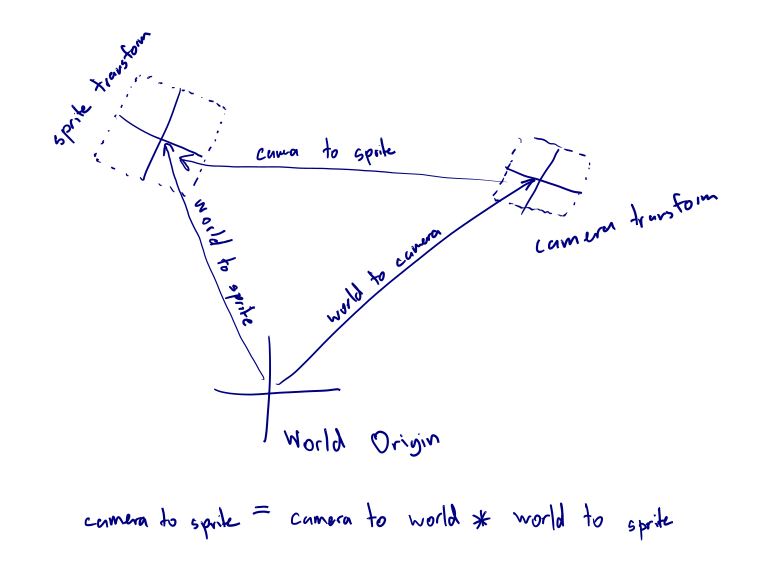
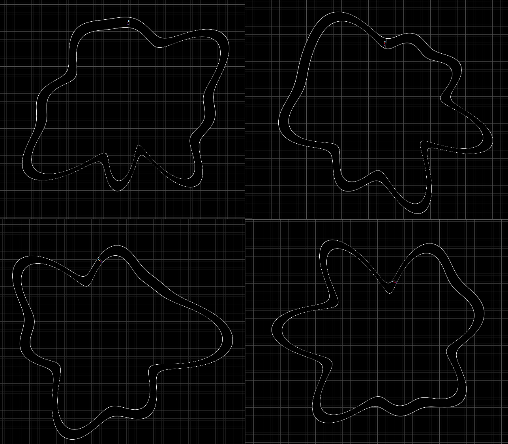
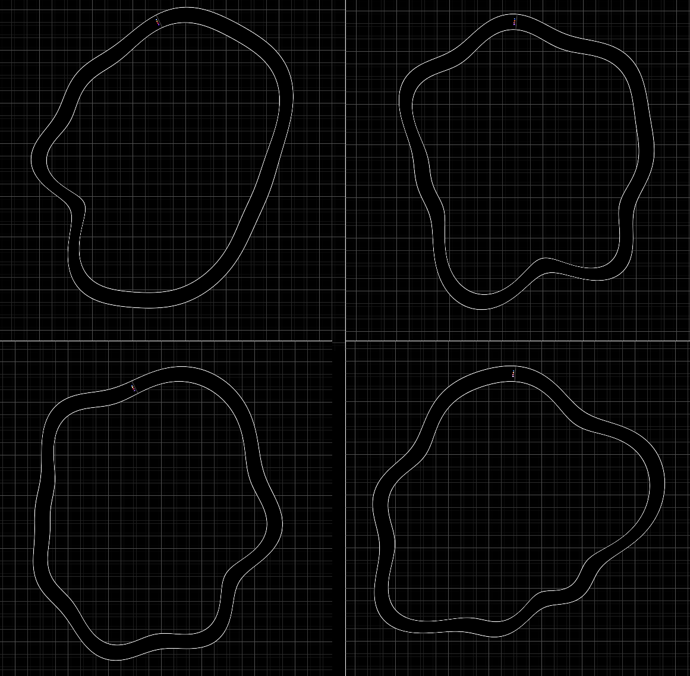
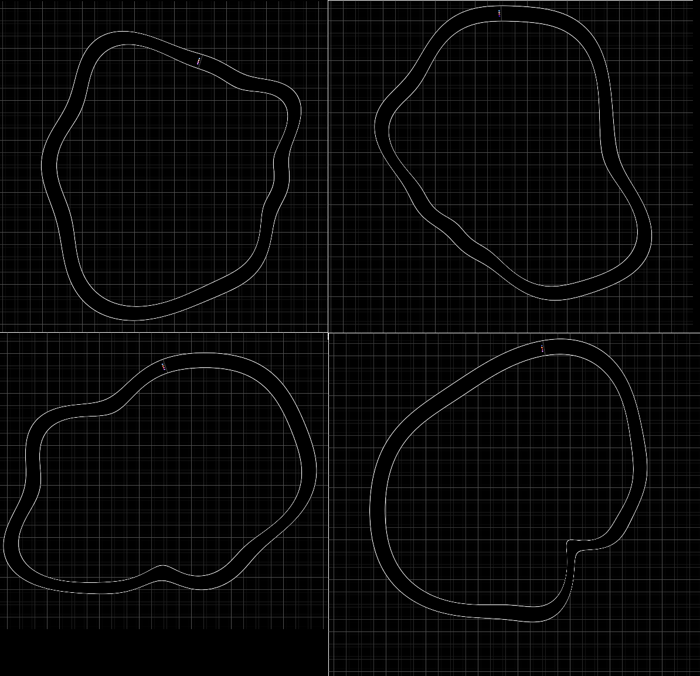
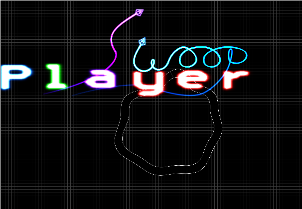
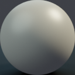

What It's All About
Game engines are huge behemoths, and contain algorithms for handling everything and the kitchen sink. While that's normally good, if you want to do something small, or possibly do something outside the bounds of a normal game enine, you suddenly have to learn how to do everything yourself.
Or perhaps you just like the "type it and run" style of development for shadertoy shaders and want something similar that you can host on your system as (pretty much) a single file.
Either way, this book chronicles my adventures into creating WASM games from scratch in Rust. All the code is available on github.
The Basics
First we'll have a look at the basics of WASM and WebGL, we'll get events from the browser, we'll draw things to the screen. All the requirements for creating a game.
Ready?
Lets go.
Building and loading WASM
WASM builds have some requirements. For example, you need to define the library
type as cdylib.
It's probably easiest to look at a working Cargo.toml:
[package]
name = "building_and_loading_wasm"
version = "0.1.0"
authors = ["Geoffrey Irons <sdfgeoff@gmail.com>"]
edition = "2018"
[lib]
crate-type = ["cdylib", "rlib"]
[dependencies]
wasm-bindgen="0.2.63"
js-sys="0.3.40"
[dependencies.web-sys]
version = "0.3.4"
features = []
Rust has a great tool called wasm-pack which makes the process of building and deploying WASM code nice and simple. It's designed to work with bundlers, but to avoid the gigabyte of dependencies that webpack pulls in, I decided to go for the simplest output type: "web".
My invocation of wasm-pack is:
wasm-pack build --out-dir $(OUT_DIR) --target web --dev
# OR
wasm-pack build --out-dir $(OUT_DIR) --target web --release
When invoked, this will create a bunch of files: core_bg.wasm, core.js, core_bg.d.ts, core.d.ts and package.json.
The only files we need are core_bg.wasm (the actual webassembly) and core.js (code that loads the WASM).
Now you need to load it from HTML/js. For all the examples in this book, loading is an invocation of the function:
"use strict"
function load(canvas, module_path, options) {
console.log("Loading", module_path)
canvas.className = "loading"
import(module_path)
.then((module) => {
module.default().then(function(obj){
let core = new module.Core(canvas.id, options)
core.start()
canvas.core = core
}).catch(function(e){
console.error("Failed to init module:", e)
canvas.className = "error"
})
}).catch(function(e) {
console.error("Failed to load:", e)
canvas.className = "error"
});
}
function setup_canvas() {
const canvases = document.querySelectorAll("canvas");
for (let canvas of canvases) {
let options = canvas.getAttribute("options") || ""
let id = canvas.id.split("-")[0] // So we can have multiple canvas' with the same app and different options
let module_path = './' + id + '/pkg/'+ id +'.js' // Path to WASM JS bindings
canvas.tabIndex = 1
canvas.addEventListener("click", function() {
load(canvas, module_path, options)
}, {'once':true})
}
}
setup_canvas()
using an element like:
<canvas id="building_and_loading_wasm"></canvas>
A very simple rust webassembly program looks like:
#![allow(unused)] fn main() { use wasm_bindgen::prelude::wasm_bindgen; // Pull in the console.log function so we can debug things more easily #[wasm_bindgen] extern "C" { #[wasm_bindgen(js_namespace = console)] fn log(s: &str); } // This struct will be accessible from JS as a JS object that can be // created using `new Core()` #[wasm_bindgen] pub struct Core {} #[wasm_bindgen] impl Core { #[wasm_bindgen(constructor)] pub fn new(canvas_id: String) -> Self { log(&format!("WASM Started for canvas {}", canvas_id)); Self {} } #[wasm_bindgen] pub fn start(&mut self) { log("App Started"); } } }
All up this creates:
You'll notice when you click on it plays a loading animation. That's done in in CSS. Normally this would get cancelled from inside the WASM binary, but this example doesn't.
To check if this example is working, you have to look at the browser console. You should see something like:
Loading ../games/trivial/core.js
WASM Started for canvas trivial
App Started
The first message comes from the javascript. The other two come from the WASM. The message will only appear once, as the javascript prevents the WAS loading twice.
Cancel the load animation
On this page, when clicking on a canvas, it sets the css style to "loading" which creates a load animation. To stop the load animation, the webassembly needs to change the classname of the canvas to "loaded" rather than "loading". To do this we need to access the DOM.
You may have noticed that in the rust on the previous page the ID of the canvas gets passed in. This allows us to find the element on the page.
In JS we would use document.getElementById(id). For some reason this doesn't
exist in web-sys, so instead we can use document.query_selector:
#![allow(unused)] fn main() { let window = window().unwrap(); let document = window.document().unwrap(); let element = document .query_selector(&selector) .expect("Call failed") .expect("No element with selector"); element.set_class_name("loaded"); }
There's a fair bit of unwrap/expecting going on there, and it isn't ideal. However, I'm not sure there really is any good way for the program to handle the place where it's trying to draw not existing, so it will do for now.
To get this code to compile, you need a bunch of things:
In your Cargo.toml you need a bunch of features from the web-sys crate:
[dependencies.web-sys]
version = "0.3.4"
features = [
"Document",
"HtmlCanvasElement",
"HtmlElement",
"Window",
]
We're using those API's, so it all makes sense. There's also the dyn_into
thing, which is in wasm_bindgen::JsCast;. This allows casting from a generic
HTMLElement into a HtmlCanvasElement.
The result:
When you click it, it goes black - the contents of the loaded style
Binding Events
To make a game you need to have input from the user such as the keyboard and mouse. You also need to have a mainloop (or some other way to update what the user see's). In a browser, these are emitted as events and updating your program can be done using requestAnimationFrame()
First lets deal with requestAnimationFrame. There's an example on the
wasm-bindgen site
which in theory makes this a copy-paste exercise.
In practice I didn't manage to get request_animation_frame to be able to
invoke a function on the Core struct. The issue is that you have to have
multiple references to the Core struct (so you can invoke
request_animation_frame again) so you need to put it in a Rc. However you
can't return the Rc from the constructor. As a result, I decided that the
Core struct would create an App struct. The App struct looks like:
#![allow(unused)] fn main() { struct App { canvas: HtmlCanvasElement, } impl App { pub fn new(canvas: HtmlCanvasElement) -> Self { Self { canvas } } pub fn animation_frame(&mut self) { log("Animation Frame") } pub fn mouse_event(&mut self, event: MouseEvent) { log(&format!("Mouse Event {:?}", event)); } pub fn key_event(&mut self, event: KeyEvent) { log(&format!("Key Event {:?}", event)); } } }
Where Event is a custom enum that I'll populate with the events that the application cares about (eg Mouse/Keyboard/Resize).
Then binding the animation_frame looks like:
#![allow(unused)] fn main() { fn make_callback(closure: &Closure<dyn FnMut()>) -> &Function { return closure.as_ref().unchecked_ref() } << snip >> let callback = Rc::new(RefCell::new(None)); let anim_app = self.app.clone(); let anim_window = window.clone(); let anim_callback = callback.clone(); *callback.borrow_mut() = Some(Closure::wrap(Box::new(move || { anim_app.borrow_mut().animation_frame(); // Schedule ourself for another requestAnimationFrame callback. anim_window .request_animation_frame(make_callback(anim_callback.borrow().as_ref().unwrap())); }) as Box<dyn FnMut()>)); window.request_animation_frame(make_callback(callback.borrow().as_ref().unwrap())); }
I will happily admit I'm 100% sure about everything going on in here. I haven't figured out trait objects yet.
Fortunately, handling the other key and mouse is a bit easier because they aren't recursive:
#![allow(unused)] fn main() { let anim_app = self.app.clone(); let callback = Closure::wrap(Box::new(move |event: web_sys::MouseEvent| { anim_app.borrow_mut().mouse_event(event); }) as Box<dyn FnMut(_)>); let callback_ref = callback.as_ref().unchecked_ref(); self.canvas.add_event_listener_with_callback("mousedown", callback_ref).unwrap(); self.canvas.add_event_listener_with_callback("mouseup", callback_ref).unwrap(); self.canvas.add_event_listener_with_callback("mousemove", callback_ref).unwrap(); self.canvas.add_event_listener_with_callback("mouseenter", callback_ref).unwrap(); self.canvas.add_event_listener_with_callback("mouseleave", callback_ref).unwrap(); self.canvas.add_event_listener_with_callback("mouseover", callback_ref).unwrap(); callback.forget(); }
There were a bunch of gotchas with key events. For some reason, key events only fire for canvas' when they have a tabindex and the canvas is focused. I wasted a good hour or two on this thinking that mdbook was gobbling the input with its document-level event handler....
Another gotcha with key events is that we need to stop the browser respoding to
them. This is easy enough with e.stop_propagation() and e.prevent_default()
which both prevent other handlers on the page and the browser from seeing the
event.
Once again there's nothing visible, but if you check the console you'll see all the events reported by the WASM
A First Shader
Now that we can get input into our game, it's time to display output for the user. We'll be using WebGL2.
Mozilla provides a great bunch of tutorials on webgl, the first of which is here This (and the next few pages) are heavily based on these tutorials.
A HTML canvas con be a whole bunch of things, only one of which is webgl. As a result, we have to specifically fetch webgl2 from the canvas:
#![allow(unused)] fn main() { fn get_gl_context(canvas: &HtmlCanvasElement) -> Result<WebGl2RenderingContext, JsValue> { Ok(canvas.get_context("webgl2")?.unwrap().dyn_into()?) } }
That's the easy part. From their to the first triangle is quite a long way. The reason it is so complex is because it is a complex thing. We need to:
- Provide a matching vertex and fragment shader (that compile with no errors)
- Provide a bunch of vertices for the shader to operate on
Porting from the Mozilla tutorials wasn't too hard, but:
- Because Rust is amazing, you have to in a bunch of error checking for JS errors
- I stripped out all the uniforms for now to make this example simpler
- Because Rust doesn't seem to have the mat4 object, I removed the perspective matrix projection from the vertex shader
After that, we have:
A triangle!
Most of the ported code for is in the file triangle.rs:
#![allow(unused)] fn main() { use wasm_bindgen::{JsCast, JsValue}; use web_sys::{WebGl2RenderingContext, WebGlBuffer, WebGlProgram, WebGlShader}; /// An error to represent problems with a shader. #[derive(Debug)] pub enum ShaderError { /// Call to gl.create_shader returned null ShaderAllocError, /// Call to create_program returned null ShaderProgramAllocError, ShaderCompileError { shader_type: u32, compiler_output: String, }, /// Failed to receive error information about why the shader failed to compile /// Generally this is indicative of trying to get the error when one hasn't occured ShaderGetInfoError, /// I think this means that the Vertex and Fragment shaders incompatible ShaderLinkError(), } /// An error with this whole object. #[derive(Debug)] pub enum TriangleError { /// Failed to upload buffer data to the GPU BufferCreationFailed, /// An unhandled/unspecified error JsError(JsValue), /// Something wrong with the shader ShaderError(ShaderError), } impl From<JsValue> for TriangleError { fn from(err: JsValue) -> TriangleError { TriangleError::JsError(err) } } impl From<ShaderError> for TriangleError { fn from(err: ShaderError) -> TriangleError { TriangleError::ShaderError(err) } } pub struct FirstTriangle { position_buffer: WebGlBuffer, program: WebGlProgram, attrib_vertex_positions: u32, } impl FirstTriangle { pub fn new(gl: &WebGl2RenderingContext) -> Result<Self, TriangleError> { let position_buffer = upload_array_f32(gl, vec![-1.0, 1.0, 1.0, 1.0, 0.0, -1.0])?; let program = init_shader_program( gl, include_str!("resources/shader.vert"), include_str!("resources/shader.frag"), )?; let attrib_vertex_positions = gl.get_attrib_location(&program, "aVertexPosition") as u32; Ok(Self { position_buffer, program, attrib_vertex_positions, }) } pub fn render(&mut self, gl: &WebGl2RenderingContext) { gl.use_program(Some(&self.program)); gl.bind_buffer( WebGl2RenderingContext::ARRAY_BUFFER, Some(&self.position_buffer), ); gl.vertex_attrib_pointer_with_i32( self.attrib_vertex_positions, 2, // num components WebGl2RenderingContext::FLOAT, false, // normalize 0, // stride 0, // offset ); gl.enable_vertex_attrib_array(self.attrib_vertex_positions); gl.draw_arrays( WebGl2RenderingContext::TRIANGLE_STRIP, 0, //offset, 3, // vertex count ); } } fn upload_array_f32( gl: &WebGl2RenderingContext, vertices: Vec<f32>, ) -> Result<WebGlBuffer, TriangleError> { let position_buffer = gl .create_buffer() .ok_or(TriangleError::BufferCreationFailed)?; gl.bind_buffer(WebGl2RenderingContext::ARRAY_BUFFER, Some(&position_buffer)); let memory_buffer = wasm_bindgen::memory() .dyn_into::<js_sys::WebAssembly::Memory>()? .buffer(); let vertices_location = vertices.as_ptr() as u32 / 4; let vert_array = js_sys::Float32Array::new(&memory_buffer) .subarray(vertices_location, vertices_location + vertices.len() as u32); gl.buffer_data_with_array_buffer_view( WebGl2RenderingContext::ARRAY_BUFFER, &vert_array, WebGl2RenderingContext::STATIC_DRAW, ); Ok(position_buffer) } fn load_shader( gl: &WebGl2RenderingContext, shader_type: u32, shader_text: &str, ) -> Result<WebGlShader, ShaderError> { let shader = gl .create_shader(shader_type) .ok_or(ShaderError::ShaderAllocError)?; gl.shader_source(&shader, shader_text); gl.compile_shader(&shader); if !gl .get_shader_parameter(&shader, WebGl2RenderingContext::COMPILE_STATUS) .is_truthy() { let compiler_output = &gl .get_shader_info_log(&shader) .ok_or(ShaderError::ShaderGetInfoError)?; gl.delete_shader(Some(&shader)); return Err(ShaderError::ShaderCompileError { shader_type, compiler_output: compiler_output.to_string(), }); } Ok(shader) } pub fn init_shader_program( gl: &WebGl2RenderingContext, vert_source: &str, frag_source: &str, ) -> Result<WebGlProgram, ShaderError> { let vert_shader = load_shader(gl, WebGl2RenderingContext::VERTEX_SHADER, vert_source)?; let frag_shader = load_shader(gl, WebGl2RenderingContext::FRAGMENT_SHADER, frag_source)?; let shader_program = gl .create_program() .ok_or(ShaderError::ShaderProgramAllocError)?; gl.attach_shader(&shader_program, &vert_shader); gl.attach_shader(&shader_program, &frag_shader); gl.link_program(&shader_program); if !(gl.get_program_parameter(&shader_program, WebGl2RenderingContext::LINK_STATUS)).is_truthy() { gl.delete_program(Some(&shader_program)); gl.delete_shader(Some(&vert_shader)); gl.delete_shader(Some(&frag_shader)); return Err(ShaderError::ShaderLinkError()); } Ok(shader_program) } }
Fixing the Resolution
We have sucessfully rendered a triangle with a shader, however it's kind-of blurry. This is because the resolution of the buffer that the webgl is rendering does not match the resolution of the image in the browser.
We need to have some code that figures out what size the canvas output is, and makes sure that the webgl has that as it's output resolution.
Easy enough:
fn check_resize(&mut self) {
let client_width = self.canvas.client_width();
let client_height = self.canvas.client_height();
let canvas_width = self.canvas.width() as i32;
let canvas_height = self.canvas.height() as i32;
if client_width != canvas_width || client_height != canvas_height {
self.canvas.set_width(client_width as u32);
self.canvas.set_height(client_height as u32);
self.gl
.viewport(0, 0, client_width, client_height);
log(&format!("Resized to {}:{}", client_width, client_height));
}
}
I ran this inside the updateAnimationFrame loop. This probably isn't ideal
because it involves sending/receiving data bewteen WASM and JS lots of times
per second. Unfortunately there isn't an "onresize" event that works for
generic elements. This could be run just when the canvas initalizes, but then
it won't catch the user zooming.
Passing In Uniforms
Uniforms are used to control a shader while it is running. They can pass in data such as object transforms, the time, the screen resolution or anything else really.
There are two parts to passing in a uniform:
- Finding where the uniform is using
gl.get_uniform_location(&program, name) - When the program is active setting the value of the uniform using
gl.uniform*to set the value.
I've also changed the triangle to being a single full-screen quad. This means we can now do fancy pixel-shader-rendering:
Yes that's a single quad. The Shader is taken from shadertoy, written by "iq" and used under CC-BY-NC-SA 3.0.
For this I passed in a floating point number for time, and a float vec2 for resolution:
let uniform_resolution = gl.get_uniform_location(&program, "iResolution");
let uniform_time = gl.get_uniform_location(&program, "iTime");
<< snip >>
gl.use_program(Some(&self.program));
gl.uniform1f(self.uniform_time.as_ref(), self.time);
gl.uniform2f(
self.uniform_resolution.as_ref(),
self.resolution.0 as f32,
self.resolution.1 as f32,
);
There are some gotcha's. The uniform name has to exist in the shader and be used.
So if you have the a shader that declares uniform float iTime but then never
uses it, the uniform will be compiled out, and get_uniform_location will
return None. Because the gl.uniform* functions can handle None, the result
is simply that it has no effect.
Another gotcha is that the program must be active (
gl.use_program(Some(&self.program));
) when you set the uniform value.
Otherwise you'll get a warning in console and nothing will happen.
Binding Textures
Being able to run a shader is one thing, but a lot of the time we also need to load in image textures. The way Mozilla suggests in their tutorials is to use a XMLHttpRequest to fetch the image. However, because we're in a compiled language we should be able to compile the image into the WASM blob. This isn't necessarily always a good solution, but for small games it ensures that the texture will be available at the same time as the WASM is loaded.
gl.texImage2D
is the function that is used to actually bind the texture. It can take input
in a whole bunch of forms, but most of these forms require uncompressed image data
or an HTML element. Rather than decompress the image in Rust, or decompress it
before including in the binary, we can get the browser to do it for us - we just
need some way to tell the browser to use data from our WASM blob as an image.
Turns out there's some hoops to jump through to get a browser to load an image from binary data:
- Convert the bytes into a Javascript Uint8Array
- Create a "Blob" object from our Uint8Array
- Create a URL so that html can "find" the image
- Point an HTMLImageElement at the url pointing at the blob.
That translates to:
#![allow(unused)] fn main() { /// Makes an HTMLImageElement display an image from a bunch of raw bytes. /// This is useful if you have an image stored with `include_bytes!()`. /// Assumes image is in PNG format fn load_image_bytes_to_image_element( image_bytes: &[u8], img_element: &HtmlImageElement, ) -> Result<(), TextureError> { let raw_arr = unsafe { Uint8Array::view(image_bytes) }; let arr = Array::new(); arr.set(0, raw_arr.dyn_into().unwrap()); let mut blob_options = web_sys::BlobPropertyBag::new(); blob_options.type_("image/png"); let blob: Blob = Blob::new_with_u8_array_sequence_and_options(&arr, &blob_options)?; let url = Url::create_object_url_with_blob(&blob)?; img_element.set_src(&url); Ok(()) } }
But loading the HTMLImageELement is asynchronus, so outside all of that we need to:
- Create a blank texture on the GPU
- Start loading the image element
- Substitute in the image when it's done.
#![allow(unused)] fn main() { pub fn load_texture(gl: &GL, image_bytes: &[u8]) -> Result<WebGlTexture, TextureError> { let texture = gl .create_texture() .ok_or(TextureError::AllocateTextureError)?; gl.bind_texture(GL::TEXTURE_2D, Some(&texture)); // Give our texture a default gl.tex_image_2d_with_i32_and_i32_and_i32_and_format_and_type_and_opt_u8_array( GL::TEXTURE_2D, 0, // Level GL::RGBA as i32, // Format 1, // width 1, // height 0, // border GL::RGBA, // source format GL::UNSIGNED_BYTE, // type Some(&[255, 0, 255, 255]), // pixels )?; let img_element = HtmlImageElement::new()?; let gl_clone = gl.clone(); let img_element_clone = img_element.clone(); let texture_clone = texture.clone(); let onload = Closure::wrap(Box::new(move || { set_up_image(&gl_clone, &img_element_clone, &texture_clone); }) as Box<dyn Fn()>); img_element.set_onload(Some(onload.as_ref().unchecked_ref())); load_image_bytes_to_image_element(image_bytes, &img_element)?; onload.forget(); Ok(texture) } }
You may notice I broke out #3 (substitude in the image when it's done) to a new function called "set up image". This is because WebGL needs to know even more about the image!!!! It needs to know how the shader should sample it, if MipMaps should be generated.....
#![allow(unused)] fn main() { /// Load an image from an HtmlImageElement to the GPU into the specified /// texture object. Makes some assumptions about the type of image filtering... pub fn set_up_image(gl: &GL, img_element: &HtmlImageElement, texture: &WebGlTexture) { gl.bind_texture(GL::TEXTURE_2D, Some(&texture)); gl.pixel_storei(GL::UNPACK_FLIP_Y_WEBGL, 1); gl.tex_parameteri(GL::TEXTURE_2D, GL::TEXTURE_MIN_FILTER, GL::NEAREST as i32); gl.tex_parameteri(GL::TEXTURE_2D, GL::TEXTURE_MAG_FILTER, GL::NEAREST as i32); gl.tex_image_2d_with_u32_and_u32_and_html_image_element( GL::TEXTURE_2D, 0, GL::RGBA as i32, GL::RGBA, GL::UNSIGNED_BYTE, &img_element, ) .expect("Loading Image Failed"); } }
It's worth mentioning that although we use
load_image_bytes_to_image_elements here, it is trivial to remove that and
instead use the set_src of the image_element to load a URL instead. This
would be useful if you have lots of textures and need to stream them in
dynamically, but for the sorts of games I plan to make it isn't really needed.
Oookay, we should be ready to go now, right? Well.... Lets create a shader that uses a some textures:
#version 300 es
// Color screen based on on-screen-position
precision mediump float;
in vec4 screen_pos;
out vec4 FragColor;
uniform sampler2D image_texture_1;
uniform sampler2D image_texture_2;
void main() {
vec2 uv = screen_pos.xy * 0.5 + 0.5;
if (uv.x < 0.49) {
FragColor = texture(image_texture_1, uv);
} else if (uv.x > 0.51) {
FragColor = texture(image_texture_2, uv);
} else {
FragColor = vec4(uv.xy, 0.0, 1.0);
}
}
The vec2 uv = screen_pos.xy * 0.5 - 0.5 is because the screen_pos variable goes
from -1 to 1, but texture coordinates in the texture function go from 0 to 1.
I'm using two textures just so I can check the binding is happening correctly
(if there is any texture in any texture unit, an unbound sampler seems to use it?!)
Now we need to tell our shader program to use our texture
#![allow(unused)] fn main() { /// Binds a texture to a uniform and a specific texture unit. NOTE: This function /// has several important things: /// 1) The shader program for the uniform must be active /// 2) The texture_unit parameter is a WebGl2RenderingContext::TEXTURE* constant pub fn bind_2d_texture_to_uniform( gl: &GL, uniform: &Option<WebGlUniformLocation>, texture: &WebGlTexture, texture_unit: TextureUnit, ) { // Tell WebGL which texture unit we are configuring gl.active_texture(texture_unit.as_gl_const()); // Tell WebGL what texture to load into the texture unit gl.bind_texture(GL::TEXTURE_2D, Some(&texture)); // Tell WebGL which uniform refers to this texture unit gl.uniform1i(uniform.as_ref(), texture_unit.as_int()); } }
What's that TextureUnit thing? It's just a handy enum mapping
GL::TextureUnit1 to the integer 1 and making it type safe....
And in our render function we can finally pass in a texture to the shader:
#![allow(unused)] fn main() { pub fn render(&mut self, gl: &WebGl2RenderingContext) { gl.use_program(Some(&self.program)); gl.uniform1f(self.uniform_time.as_ref(), self.time); gl.uniform2f( self.uniform_resolution.as_ref(), self.resolution.0 as f32, self.resolution.1 as f32, ); bind_2d_texture_to_uniform( &gl, &self.uniform_image_texture_1, &self.image_texture_1, TextureUnit::Unit0, ); bind_2d_texture_to_uniform( &gl, &self.uniform_image_texture_2, &self.image_texture_2, TextureUnit::Unit1, ); gl.bind_buffer( WebGl2RenderingContext::ARRAY_BUFFER, Some(&self.position_buffer), ); gl.vertex_attrib_pointer_with_i32( self.attrib_vertex_positions, 2, // num components WebGl2RenderingContext::FLOAT, false, // normalize 0, // stride 0, // offset ); gl.enable_vertex_attrib_array(self.attrib_vertex_positions); gl.draw_arrays( WebGl2RenderingContext::TRIANGLE_STRIP, 0, //offset, 4, // vertex count ); } }
After all that confuffling, The end result is:
A First Game: Swoop
Righto, we can draw things to the screen, we can grab input from the user, all that remains is to create a game. I'm going to replicate my shadertoy game "space racer":
In shadertoy there are no sprites, so everything there is drawn in a single full-screen squad (with some buffering for state). This limits what is possible and makes things like the AI and counting laps hard to do in a way that will run performantly. By using WebGL only for the rendering and using rust/wasm for the collisions/logic, we should be able to create a better game.
Drawing The Player Ship
In the shadertoy game, the ship is drawn using a signed distance field. That's because you can't load custom textures. Here, we just learned how to bind textures. We still want our textures to contain a gradient (as that is what was used for the neon effect), but now we can draw the ship in a graphics program like Gimp rather than hand-coding lines as a bunch of coordinates.
Here's our ship texture:

You may notice it's a little different to the ship we're trying to draw. That's because I want to be able to turn the engine on and off. I also think a "collision shield" effect could be quite nice - to let the player know when they hit things. For this reason, I've put three things on different channels:
- Red Channel: the ship
- Blue Channel: the ship's engine flame
- Green Channel: the ship's collision shield
All of these are distance-field-esque, allowing the "blur" to be tuurned into a nice neon glow.
The fragment shader that does the rendering isn't too complex:
#version 300 es
precision mediump float;
in vec2 uv;
out vec4 FragColor;
uniform sampler2D ship_texture;
uniform float ship_engine;
uniform vec4 ship_color;
vec4 neon(float sdf, vec4 color, float glow_width) {
float ramp = clamp(1.0 - sdf / glow_width, 0.0, 1.0);
vec4 outp = vec4(0.0);
ramp = ramp * ramp;
outp += pow(color, vec4(4.0)) * ramp;
ramp = ramp * ramp;
outp += color * ramp;
ramp = ramp * ramp;
outp += vec4(1.0) * ramp;
return outp;
}
void main() {
vec4 raw_sprite = texture(ship_texture, uv * 0.5 - 0.5);
FragColor = neon(1.0 - raw_sprite.r, ship_color, 1.0);
vec4 engine_color = ship_engine * ship_color;
FragColor += neon(1.0 - raw_sprite.b, engine_color, 1.0) * ship_engine;
}
You should be able to spot how the shader separates the engine flare from the ship, and how it generates the neon gradient of colors.
The main challenge here is drawing the player in the right place at the right size. The vertex shader needs to consider the camera's transformation, the aspect ratio of the canvas, and the transformation of the player's sprite.
To achieve peak runtime efficiency, we should compute/combine these matrices on the CPU, and then load a single transformation matrix to the GPU (which then processes it for each vertex). However, if we wanted to do that we'd need to have matrix maths in Rust. Sure, there are crates for that but it would increase the binary size and require more data massaging. So instead we will do all the matrix maths inside the shader. Note that we can only do this because we don't have any object hierarchies. If you had an object hierarchy you would need to do math on the CPU to find the final location of the objects.
So what math needs to occur inside the shader? We need to end up with a matrix that takes positions in sprite-local space and converts them into canvas-clip space.
I find figuring this out much easier with a diagram:

Using the One true naming
scheme
for matrices makes this simpler. If we the matrix indicating the
"sprite transform" matrix world_to_camera (because it represents the
transformation from world space into sprite space), then we can invert
it to get camera_to_world.
So we end up with the matrix chain:
#version 300 es
precision mediump float;
in vec4 aVertexPosition;
uniform mat3 world_to_camera;
uniform mat3 world_to_sprite;
uniform mat3 camera_to_clipspace; // Includes canvas resolution/aspect ratio
out vec2 uv;
void main() {
mat3 camera_to_world = inverse(world_to_camera);
mat3 clipspace_to_camera = inverse(camera_to_clipspace);
mat3 camera_to_sprite = camera_to_world * world_to_sprite;
mat3 sprite_to_clipspace = clipspace_to_camera * camera_to_sprite;
vec2 pos = (sprite_to_clipspace * vec3(aVertexPosition.xy, 1.0)).xy;
uv = aVertexPosition.xy;
gl_Position = vec4(pos, 0.0, 1.0);
}
Now, obviously there is a little bit more to getting it to render than just the shaders. For example, the object representing the sprite is needs to contain all the new uniforms:
#![allow(unused)] fn main() { pub struct ShipSprite { position_buffer: WebGlBuffer, program: WebGlProgram, attrib_vertex_positions: u32, uniform_ship_engine: Option<WebGlUniformLocation>, uniform_ship_texture: Option<WebGlUniformLocation>, uniform_ship_color: Option<WebGlUniformLocation>, uniform_world_to_camera: Option<WebGlUniformLocation>, uniform_world_to_sprite: Option<WebGlUniformLocation>, uniform_camera_to_clipspace: Option<WebGlUniformLocation>, pub ship_texture: WebGlTexture, pub ship_color: (f32, f32, f32, f32), pub ship_engine: f32, pub world_to_camera: [f32; 9], pub world_to_sprite: [f32; 9], pub camera_to_clipspace: [f32; 9], } }
And the uniforms have to be set at render-time:
#![allow(unused)] fn main() { gl.uniform_matrix3fv_with_f32_array( self.uniform_world_to_sprite.as_ref(), true, &self.world_to_sprite ); // etc. }
The various transformation matrices also have to be generated somehow.
As mentioned before, I didn't want to pull in a full crate like glam
or nalgebra, so instead I wrote a small module transform.rs
containing:
#![allow(unused)] fn main() { /// A non-generic transform in 2D. Only supports rotations translations /// and a uniform scaling. pub struct Transform2d { pub x: f32, pub y: f32, pub rot: f32, pub scale: f32, } impl Transform2d { pub fn new(x: f32, y: f32, rot: f32, scale: f32) -> Self { Self { x, y, rot, scale } } pub fn to_mat3_array(&self) -> [f32; 9] { let c = f32::cos(self.rot) * self.scale; let s = f32::sin(self.rot) * self.scale; [c, -s, self.x, s, c, self.y, 0.0, 0.0, 1.0] } } }
Finally we have to set everything an invoke render. The nice thing about working functionally here is that we can invoke render multiple times after setting different parameters. As such we can render two ships with one "ship sprite":
#![allow(unused)] fn main() { pub fn animation_frame(&mut self) { let now = window().unwrap().performance().unwrap().now(); let time = (now / 1000.0) as f32; self.check_resize(); self.gl.clear( WebGl2RenderingContext::COLOR_BUFFER_BIT | WebGl2RenderingContext::DEPTH_BUFFER_BIT, ); let mut ship_sprite_transform = Transform2d::new(0.0, 0.0, f32::sin(time), 0.1); let camera_transform = Transform2d::new(0.0, 0.0, 0.0, 1.0 / self.canvas_resolution.0 as f32); self.ship_sprite.world_to_camera = camera_transform.to_mat3_array(); self.ship_sprite.camera_to_clipspace = [ self.canvas_resolution.0 as f32, 0.0, 0.0, 0.0, self.canvas_resolution.1 as f32, 0.0, 0.0, 0.0, 1.0, ]; // Render the first ship self.ship_sprite.world_to_sprite = ship_sprite_transform.to_mat3_array(); self.ship_sprite.ship_color = (0.0, 0.5, 1.0, 1.0); self.ship_sprite.ship_engine = 0.0; self.ship_sprite.render(&self.gl); // Render another ship ship_sprite_transform.x = f32::sin(time) * 0.5; ship_sprite_transform.y = f32::cos(time) * 0.5; ship_sprite_transform.rot = - std::f32::consts::PI / 2.0 - time; self.ship_sprite.world_to_sprite = ship_sprite_transform.to_mat3_array(); self.ship_sprite.ship_color = (1.0, 0.5, 0.0, 1.0); self.ship_sprite.ship_engine = 1.0; self.ship_sprite.render(&self.gl); } }
Proof that it all works:
Drawing The Map
The map is the background for the everything, so we have two options:
- Use a plane the size of the map and use the same transform stack as for the player ship.
- Use a plane the size of the screen and shift the UV coordinates to match the transform stack.
If we were doing an infinite map (ie some sort of exploration game) we would have to go with #2, but because we are doing a racing game where the map is well bounded, solution #1 works just fine and saves a bunch of effort.
So let's just copy our player sprite code and make it draw a bigger plane
with a different shader. We'll shunt the functions that handle uploading
the shader into a module shader.rs, but we because this is a small
game I won't bother trying to generalize the sprite code. Pretty much
the only code in the ship_sprites.rs and map_sprite.rs is to do
with handling uniforms - which is likely to be pretty shader specific.
use wasm_bindgen::{JsCast, JsValue};
use web_sys::{WebGl2RenderingContext, WebGlBuffer, WebGlProgram, WebGlShader};
/// An error to represent problems with a shader.
#[derive(Debug)]
pub enum ShaderError {
/// Call to gl.create_shader returned null
ShaderAllocError,
/// Call to create_program returned null
ShaderProgramAllocError,
ShaderCompileError {
shader_type: u32,
compiler_output: String,
},
/// Failed to receive error information about why the shader failed to compile
/// Generally this is indicative of trying to get the error when one hasn't occured
ShaderGetInfoError,
/// I think this means that the Vertex and Fragment shaders incompatible
ShaderLinkError(),
/// Failed to create buffer to upload data into
BufferCreationFailed,
/// Generic javascript error
JsError(JsValue),
}
impl From<JsValue> for ShaderError {
fn from(err: JsValue) -> ShaderError {
ShaderError::JsError(err)
}
}
pub fn upload_array_f32(
gl: &WebGl2RenderingContext,
vertices: Vec<f32>,
) -> Result<WebGlBuffer, ShaderError> {
let position_buffer = gl
.create_buffer()
.ok_or(ShaderError::BufferCreationFailed)?;
gl.bind_buffer(WebGl2RenderingContext::ARRAY_BUFFER, Some(&position_buffer));
let memory_buffer = wasm_bindgen::memory()
.dyn_into::<js_sys::WebAssembly::Memory>()?
.buffer();
let vertices_location = vertices.as_ptr() as u32 / 4;
let vert_array = js_sys::Float32Array::new(&memory_buffer)
.subarray(vertices_location, vertices_location + vertices.len() as u32);
gl.buffer_data_with_array_buffer_view(
WebGl2RenderingContext::ARRAY_BUFFER,
&vert_array,
WebGl2RenderingContext::STATIC_DRAW,
);
Ok(position_buffer)
}
pub fn load_shader(
gl: &WebGl2RenderingContext,
shader_type: u32,
shader_text: &str,
) -> Result<WebGlShader, ShaderError> {
let shader = gl
.create_shader(shader_type)
.ok_or(ShaderError::ShaderAllocError)?;
gl.shader_source(&shader, shader_text);
gl.compile_shader(&shader);
if !gl
.get_shader_parameter(&shader, WebGl2RenderingContext::COMPILE_STATUS)
.is_truthy()
{
let compiler_output = &gl
.get_shader_info_log(&shader)
.ok_or(ShaderError::ShaderGetInfoError)?;
gl.delete_shader(Some(&shader));
return Err(ShaderError::ShaderCompileError {
shader_type,
compiler_output: compiler_output.to_string(),
});
}
Ok(shader)
}
pub fn init_shader_program(
gl: &WebGl2RenderingContext,
vert_source: &str,
frag_source: &str,
) -> Result<WebGlProgram, ShaderError> {
let vert_shader = load_shader(gl, WebGl2RenderingContext::VERTEX_SHADER, vert_source)?;
let frag_shader = load_shader(gl, WebGl2RenderingContext::FRAGMENT_SHADER, frag_source)?;
let shader_program = gl
.create_program()
.ok_or(ShaderError::ShaderProgramAllocError)?;
gl.attach_shader(&shader_program, &vert_shader);
gl.attach_shader(&shader_program, &frag_shader);
gl.link_program(&shader_program);
if !(gl.get_program_parameter(&shader_program, WebGl2RenderingContext::LINK_STATUS)).is_truthy()
{
gl.delete_program(Some(&shader_program));
gl.delete_shader(Some(&vert_shader));
gl.delete_shader(Some(&frag_shader));
return Err(ShaderError::ShaderLinkError());
}
Ok(shader_program)
}
So anyway, here's drawing the coordinates for the map:
You may think we would use a texture for the map, just as we did for the player ship, however the map has slightly different requirements. As well as being used to show the player where to go, we need to be able to query the map and find out if a certain area is on the track or not. While sampling an image is possible, it will be easier to define the map with a mathematical function. This function can then be evaluated on the CPU or GPU and will give the same results.
So what function should we use to draw the map? If the map function returns an approximate distance to the racetrack, then we can use finite difference (or possibly an analytic solution) to resolve collision normals. So we want a function of the form:
float map_distance_field = map_function(vec2 position)
The racetrack should loop back on itself, so it's basic form should be a circle. We can then distort the circle to make the course more interesting to race around using a fourier series.
So how do we get the signed distance field for a circle? Well, the distance from a single point is a good start:
float course = length(position - vec2(0.0, 0.0));
We're going to define our distance field as negative values being a drivable area and positive values being walls. (aka distance to the track). So lets expand our circle by the track radius:
float track_sdf = course - track_radius;
To make things clearer while debugging, let's threshold it so we can see where the track edges are:
FragColor = vec4(vec3(track_sdf > 0.0), 1.0);
This gives us:
You can see there's a black circle in the middle of the screen. This would mean that the player can fly anywhere in that circle. We want the player in a track, not an arena.
To turn it into a ring, we can use the abs function to make it symmetric around the current edge, and then offset it to reintroduce some negative (track) area:
track_sdf = abs(track_sdf) - track_width;
(Note that the blue ship is invisible because the ships use additive blending)
Don't understand what is happening here? You're probably not alone. Signed distance fields (SDF's) are a bit counter-intuitive at first. I can't think of a good way to explain it, but it should become evident how it works fairly quickly if you open up shadertoy and have a play yourself.
Flying around a circular track isn't very interesting, so we can use a fourier series to distort it based on the angle from the center:
#version 300 es
precision mediump float;
in vec2 uv;
out vec4 FragColor;
const float track_base_radius = 0.5;
const float track_width = 0.1;
vec4 sin_consts_1 = vec4(0.2, 0.0, 0.0, 0.0);
vec4 sin_consts_2 = vec4(0.0, 0.0, 0.0, 0.0);
vec4 cos_consts_1 = vec4(0.0, -0.2, 0.0, 0.1);
vec4 cos_consts_2 = vec4(0.0, 0.0, 0.05, 0.0);
float map_function(vec2 position) {
float course = length(position - vec2(0.0, 0.0));
float angle = atan(position.x, position.y);
vec4 angles_1 = vec4(angle, angle*2.0, angle*3.0, angle*4.0);
vec4 angles_2 = vec4(angle*5.0, angle*6.0, angle*7.0, angle*8.0);
float track_radius = track_base_radius;
track_radius += dot(sin(angles_1), sin_consts_1);
track_radius += dot(sin(angles_2), sin_consts_2);
track_radius += dot(cos(angles_1), cos_consts_1);
track_radius += dot(cos(angles_2), cos_consts_2);
float track_sdf = course - track_radius;
track_sdf = abs(track_sdf) - track_width;
return track_sdf;
}
void main() {
float track = map_function(uv);
FragColor = vec4(vec3(track > 0.0), 1.0);
}
And the resulting track:
It shouldn't be hard to port the map function into rust when it comes time to write the collision detection.
Now to make it look pretty by adding a grid in the background and drawing some lines around the edge:
Looks like a pretty small map? That's OK, we can tweak it using the
track_width and track_base_radius parameters later.
The final map rendering shader is:
#version 300 es
precision mediump float;
in vec2 uv;
out vec4 FragColor;
const float track_base_radius = 0.5;
const float track_width = 0.1;
const float track_background_grid_spacing = 5.0;
const float track_background_line_fade = 0.04;
const float track_background_line_width = 1.0;
const float track_edge_line_width = 0.5;
vec4 sin_consts_1 = vec4(0.2, 0.0, 0.0, 0.0);
vec4 sin_consts_2 = vec4(0.0, 0.0, 0.0, 0.0);
vec4 cos_consts_1 = vec4(0.0, -0.2, 0.0, 0.1);
vec4 cos_consts_2 = vec4(0.0, 0.0, 0.05, 0.0);
float map_function(vec2 position) {
float course = length(position - vec2(0.0, 0.0));
float angle = atan(position.x, position.y);
vec4 angles_1 = vec4(angle, angle*2.0, angle*3.0, angle*4.0);
vec4 angles_2 = vec4(angle*5.0, angle*6.0, angle*7.0, angle*8.0);
float track_radius = track_base_radius;
track_radius += dot(sin(angles_1), sin_consts_1);
track_radius += dot(sin(angles_2), sin_consts_2);
track_radius += dot(cos(angles_1), cos_consts_1);
track_radius += dot(cos(angles_2), cos_consts_2);
float track_sdf = course - track_radius;
track_sdf = abs(track_sdf) - track_width;
return track_sdf;
}
vec4 neon(float sdf, vec4 color, float glow_width) {
float ramp = clamp(1.0 - sdf / glow_width, 0.0, 1.0);
vec4 outp = vec4(0.0);
ramp = ramp * ramp;
outp += pow(color, vec4(4.0)) * ramp;
ramp = ramp * ramp;
outp += color * ramp;
ramp = ramp * ramp;
outp += vec4(1.0) * ramp;
return outp;
}
float background_grid(vec2 world_coordinates) {
vec2 sections = mod(world_coordinates * track_background_grid_spacing, 1.0);
sections = abs(0.5 - sections);
vec2 lines = sections + track_background_line_fade;
lines /= track_background_line_width;
return min(lines.x, lines.y);
}
float map_edges(float track) {
return abs(track) / track_edge_line_width;
}
void main() {
float track = map_function(uv);
float edge_sdf = map_edges(track);
float background_grid = background_grid(uv);
float map_visualized = edge_sdf;
if (track > 0.0) {
map_visualized = min(edge_sdf, background_grid);
}
FragColor = neon(
map_visualized,
vec4(0.9, 0.9, 0.9, 1.0), 0.1
);
}
Ship Motion Physics
Currently the ship sprites are positioned by simple time-varying functions. We need to switch this to being controlled by some sort of physics. There are a couple parts to the physics:
- Motion Dynamics (drag, inertia, application of thrust)
- Collision Detection
This page will cover the motion dynamics.
The first part is to define our in-game ship entity. The ship entity needs to store the current position, the velocity, and the state of the engine. To make it easier to render, the ship entity also contains it's color and to allow the motion physics to be separated from the input/control logic, the application of force/thrust is also a separate member:
#![allow(unused)] fn main() { pub struct Ship { pub position: Transform2d, pub velocity: Transform2d, pub linear_thrust: f32, pub turning_thrust: f32, pub color: (f32, f32, f32, f32), } }
Inside the game we can now create a vector of ships, and render it with a single ship sprite:
#![allow(unused)] fn main() { pub struct App { .... ship_sprite: ShipSprite, ship_entities: Vec<Ship>, .... } << snip >> // Render all the ships self.ship_sprite.world_to_camera = world_to_camera; self.ship_sprite.camera_to_clipspace = camera_to_clipspace; for ship in &self.ship_entities { self.ship_sprite.world_to_sprite = ship.position.to_mat3_array(); self.ship_sprite.ship_color = ship.color; self.ship_sprite.ship_engine = ship.linear_thrust; self.ship_sprite.render(&self.gl); } }
So now that we can see our ship entities, what does the motion physics look like?
- The engine should provide thrust in the direction the ship is facing
- There should be damping/drag to slow the ship down
Conceptually:
acceleration -= k_drag * velocity
acceleration += ship_direction * thrust * k_thrust
velocity += acceleration * delta_time
position += velocity * delta_time
Turns out that's all that's really required:
#![allow(unused)] fn main() { use super::transform::Transform2d; const ENGINE_THRUST: f32 = 10.0; const TURNING_THRUST: f32 = 40.0; const LINEAR_DAMPING: f32 = 2.0; const ANGULAR_DAMPING: f32 = 8.0; pub struct Ship { pub position: Transform2d, pub velocity: Transform2d, pub linear_thrust: f32, pub angular_thrust: f32, pub color: (f32, f32, f32, f32), } impl Ship { pub fn new(color: (f32, f32, f32, f32), start_transform: Transform2d) -> Self { Ship { position: start_transform, velocity: Transform2d::new(0.0, 0.0, 0.0, 0.0), linear_thrust: 0.0, angular_thrust: 0.0, color: color, } } pub fn update(&mut self, dt: f32) { let angle: f32 = self.position.rot; let c = f32::cos(angle); let s = f32::sin(angle); let forwards = (-s, c); let mut acceleration = (0.0, 0.0, 0.0); acceleration.0 += forwards.0 * self.linear_thrust * ENGINE_THRUST; acceleration.1 += forwards.1 * self.linear_thrust * ENGINE_THRUST; acceleration.2 += self.angular_thrust * TURNING_THRUST; acceleration.0 -= self.velocity.x * LINEAR_DAMPING; acceleration.1 -= self.velocity.y * LINEAR_DAMPING; acceleration.2 -= self.velocity.rot * ANGULAR_DAMPING; self.velocity.x += acceleration.0 * dt; self.velocity.y += acceleration.1 * dt; self.velocity.rot += acceleration.2 * dt; // Integration self.position.x += self.velocity.x * dt; self.position.y += self.velocity.y * dt; self.position.rot += self.velocity.rot * dt; self.position.rot = wrap_angle(self.position.rot); } } fn wrap_angle(angle: f32) -> f32 { // Ensure a number is between pi and -pi // Not sure if this is the optimal way, but it works let angle = angle + std::f32::consts::PI; // Work between 0 and 2PI; let sig = f32::signum(angle); let mag = f32::abs(angle) % (2.0 * std::f32::consts::PI); return sig * (mag - std::f32::consts::PI); } }
Connect up some input to one of the ships:
#![allow(unused)] fn main() { pub fn key_event(&mut self, event: KeyboardEvent) { let player_entity = &mut self.ship_entities[0]; if event.code() == "KeyW" { player_entity.linear_thrust = 1.0; } if event.code() == "KeyS" { player_entity.linear_thrust = -1.0; } if event.code() == "KeyA" { player_entity.angular_thrust = 1.0; } if event.code() == "KeyD" { player_entity.angular_thrust = -1.0; } } }
And we are good to go:
You'll notice that once you start turning it keeps turning, that's because we haven't yet turned the keypress events into something that cleanly signals if the player is holding the key down or not. I was also sneaky and defined the camera transform as the X/Y transform of the player.
Keyboard Input
In the previous example, the keyboard input acts as though the player
holds down any key he presses. This is because HTML/Javascript doesn't
give us a way to query if a key is currently held down - it only gives
is keydown and keyup events. Back in
binding_events we just smashed all
the key events into one. It's time to break those into separate function
calls and to maintain state for the keys we are interested in.
Assing the extra binding is a case of modifying the Core struct to
separate the bindings:
{
// keyboard events
self.canvas.set_tab_index(1); // Canvas elements ignore key events unless they have a tab index
let anim_app1 = self.app.clone();
let anim_app2 = self.app.clone();
let keydown_callback = Closure::wrap(Box::new(move |event: KeyboardEvent| {
let e: Event = event.clone().dyn_into().unwrap();
e.stop_propagation();
e.prevent_default();
anim_app1.borrow_mut().keydown_event(event);
}) as Box<dyn FnMut(_)>);
let keyup_callback = Closure::wrap(Box::new(move |event: KeyboardEvent| {
let e: Event = event.clone().dyn_into().unwrap();
e.stop_propagation();
e.prevent_default();
anim_app2.borrow_mut().keyup_event(event);
}) as Box<dyn FnMut(_)>);
self.canvas
.add_event_listener_with_callback("keydown", keydown_callback.as_ref().unchecked_ref())
.unwrap();
self.canvas
.add_event_listener_with_callback("keyup", keyup_callback.as_ref().unchecked_ref())
.unwrap();
keydown_callback.forget();
keyup_callback.forget();
}
And creating the extra function in our App struct:
pub fn keydown_event(&mut self, event: KeyboardEvent) {
// Do something
}
pub fn keyup_event(&mut self, event: KeyboardEvent) {
// Do something else
}
Now we need to mantain the state. Let's create an enum to represent the state of the keys and how it transitions between states.
impl KeyState {
fn update(&self) -> KeyState {
match self {
KeyState::JustPressed => KeyState::Down,
KeyState::Down => KeyState::Down,
KeyState::JustReleased => KeyState::Up,
KeyState::Up => KeyState::Up,
}
}
fn active(&self) -> bool {
match self {
KeyState::JustPressed => true,
KeyState::Down => true,
KeyState::JustReleased => false,
KeyState::Up => false,
}
}
}
So the idea is that the JS events set the KeyState into
JustPressed or JustReleased, and then on the subsequent frames
it is in the state Down or Up. Code can either query the edge event
by looking at the value of the KeyState directly, or can use the "active"
function to determine if the key is in a "downy" state.
And now create a struct to store the state for each key we're interested in:
struct KeyMap {
forwards: KeyState,
backwards: KeyState,
turn_left: KeyState,
turn_right: KeyState,
}
impl KeyMap {
fn new() -> Self {
Self {
forwards: KeyState::Up,
backwards: KeyState::Up,
turn_left: KeyState::Up,
turn_right: KeyState::Up,
}
}
fn update(&mut self) {
self.forwards = self.forwards.update();
self.backwards = self.backwards.update();
self.turn_left = self.turn_left.update();
self.turn_right = self.turn_right.update();
}
fn set_state_from_str(&mut self, code: &str, new_state: KeyState) {
match code {
"KeyW" => {self.forwards = new_state},
"KeyS" => {self.backwards = new_state},
"KeyA" => {self.turn_left = new_state},
"KeyD" => {self.turn_right = new_state},
_ => ()
};
}
}
On the keyup and keydown events the function set_state_from_str will
be called, and on every action frame, update will be called.
One final thing and that is that the keydown event continues to fire when
held down, so the contents of our keydown and keyup functions should be:
pub fn keydown_event(&mut self, event: KeyboardEvent) {
if !event.repeat() {
self.key_map.set_state_from_str(&event.code(), KeyState::JustPressed);
}
}
pub fn keyup_event(&mut self, event: KeyboardEvent) {
self.key_map.set_state_from_str(&event.code(), KeyState::JustReleased);
}
Now we can map the state of the key_map to the player in our animation frame
callback:
let player_ship = &mut self.ship_entities[0];
player_ship.linear_thrust = 0.0;
player_ship.angular_thrust = 0.0;
if self.key_map.forwards.active() {
player_ship.linear_thrust += 1.0
}
if self.key_map.backwards.active() {
player_ship.linear_thrust -= 1.0
}
if self.key_map.turn_left.active() {
player_ship.angular_thrust += 1.0
}
if self.key_map.turn_right.active() {
player_ship.angular_thrust -= 1.0
}
self.key_map.update();
And the result is:
Why implement it all this way? Why not convert the key string to an enum then use a hashmap to store key state, and make the KeyMap more generic? The same reason I didn't factor out generic "sprite drawing code" - I'm not trying to make a game engine here, and this is the simplest way to get the job done.
Collision Physics
Collision with other ships
Physics is a slightly harder topic in Rust than it would be in other languages because Rust cares about mutability. So when you go through an array of objects and generate a set containing pairs of objects, Rust's borrow checker starts yelling at you. When you then try an iterate through the pairs and try have mutable access to them, it yells even more.
Now, when writing the system, the programmer knows that he will never try to mutate the same object at the same time, but how can we tell Rust that?
I couldn't think of a good way, so I fell back on run-time reference
and mutability checks - aka
Rc and
RefCell.
Rc allows us to have multiple references to the same object, and RefCell
allows us to obtain mutability at runtime - but it will panic if something
else is already borrowing it. That's fine because that now makes it the
programmers job to ensure we don't try to call borrow_mut() twice.
So, we need to end up with a vector of pairs of Rc<RefCell<&mut Ship>>>
Why use &mut Ship? So that our ships stay safely in their existing
vector, and we just fiddle around with references to them. The easiest
way to get this vector of pairs is to use the itertools::permutations
which will generate all unique permutations of the vector.
The resulting code:
#![allow(unused)] fn main() { use itertools::Itertools; let ship_refs = self.ship_entities.iter_mut().map(|x| Rc::new(RefCell::new(x))); let all_pairs: ship_refs.permutations(2); }
Now we can use filter_map to convert the "probable" collision pairs
into details of each collisions:
#![allow(unused)] fn main() { struct CollisionEvent<'a> { obj1: Rc<RefCell<&'a mut Ship>>, obj2: Rc<RefCell<&'a mut Ship>>, normal: (f32, f32), overlap: f32, } << snip >> let collisions = all_pairs.filter_map(|ships: Vec<Rc<RefCell<&mut Ship>>>| { let ship1 = ships[0].clone(); let ship2 = ships[1].clone(); let normal = vect_between(&ship1.borrow().position, &ship2.borrow().position); let len = length(normal); if len < SHIP_RADIUS { Some(CollisionEvent { obj1: ship1, obj2: ship2, normal: normalize(normal), overlap: len - SHIP_RADIUS, }) } else { None } }); }
And finally we can move the ships when they're colliding:
#![allow(unused)] fn main() { collisions.for_each(|pair| { let mut ship1 = pair.obj1.borrow_mut(); let mut ship2 = pair.obj2.borrow_mut(); ship1.position.x -= pair.normal.0 * pair.overlap * 0.5; ship1.position.y -= pair.normal.1 * pair.overlap * 0.5; ship2.position.x += pair.normal.0 * pair.overlap * 0.5; ship2.position.y += pair.normal.1 * pair.overlap * 0.5; }); }
For convenience, some of these functions can be broken out of their inline representation, but you have to specify lifetimes:
fn check_collision<'a>(ship1: Rc<RefCell<&'a mut Ship>>, ship2: Rc<RefCell<&'a mut Ship>>) -> Option<CollisionEvent<'a>>
Collision with the map
When we rendered the map, we used a mathematical function to represent the map. The advantage of this is that it means we can evaluate the map on the CPU to determine collisions with the map.
In GLSL this function is:
vec4 sin_consts_1 = vec4(0.2, 0.0, 0.0, 0.0);
vec4 sin_consts_2 = vec4(0.0, 0.0, 0.0, 0.0);
vec4 cos_consts_1 = vec4(0.0, -0.2, 0.0, 0.1);
vec4 cos_consts_2 = vec4(0.0, 0.0, 0.05, 0.0);
float map_function(vec2 position) {
float course = length(position - vec2(0.0, 0.0));
float angle = atan(position.x, position.y);
vec4 angles_1 = vec4(angle, angle*2.0, angle*3.0, angle*4.0);
vec4 angles_2 = vec4(angle*5.0, angle*6.0, angle*7.0, angle*8.0);
float track_radius = track_base_radius;
track_radius += dot(sin(angles_1), sin_consts_1);
track_radius += dot(sin(angles_2), sin_consts_2);
track_radius += dot(cos(angles_1), cos_consts_1);
track_radius += dot(cos(angles_2), cos_consts_2);
float track_sdf = course - track_radius;
track_sdf = abs(track_sdf) - track_width;
return track_sdf;
}
To make it easier to match (and pass values between), I converted this to:
const float sin_consts[8] = float[8](0.2, 0.0, 0.0, 0.0, 0.0, 0.0, 0.0, 0.0);
const float cos_consts[8] = float[8](0.0, -0.2, 0.0, 0.1, 0.0, 0.0, 0.05, 0.0);
float map_function(vec2 position) {
float course = length(position - vec2(0.0, 0.0));
float angle = atan(position.x, position.y);
float track_radius = track_base_radius;
for (int i=0; i<8; i++) {
float omega = float(i+1);
track_radius += cos(angle * omega) * cos_consts[i];
track_radius += sin(angle * omega) * sin_consts[i];
}
float track_sdf = course - track_radius;
track_sdf = abs(track_sdf) - track_width;
return track_sdf;
}
It's a bit less efficient (doesn't take advantage of the GPU being able to do operations on multiple vector elements at the same time), but GPU performance isn't likely to be an issue in this game, and it means that the rust code looks like:
#![allow(unused)] fn main() { pub fn distance_field(&self, position: Vec2) -> f32 { let course = length(position); let angle = position.0.atan2(position.1); let mut track_radius = self.track_base_radius; for i in 0..8 { let omega = (i + 1) as f32; track_radius += f32::sin(angle * omega) * self.sin_consts[i]; track_radius += f32::cos(angle * omega) * self.cos_consts[i]; } let mut track_sdf = course - track_radius; track_sdf = f32::abs(track_sdf) - self.track_width; return track_sdf; } }
Easy to visually compare for correctness
Detecting if the ship is on/off the map is only half the problem. The other part is getting the collision normal. One option would be to do an analytical solution of the fourier series (which wouldn't be too hard because it's a fourier series), or we can apply finite-difference.
#![allow(unused)] fn main() { // Uses finite difference to approximate the normal. This isn't quite // the actual normal because the distance field isn't quite the distance // field. pub fn calc_normal(&self, position: Vec2) -> Vec2 { const DELTA: f32 = 0.01; let here = self.distance_field(position); let above = self.distance_field((position.0, position.1 + DELTA)); let right = self.distance_field((position.0 + DELTA, position.1)); let dx = right - here; let dy = above - here; return normalize((dx, dy)); } }
Yeah, I picked finite difference.
From here it's the very similar as for the ship collisions: move the ship so that it's no longer colliding. I'll also add in a term to slow the ship motion when colliding with a wall - just to encourage players not to wall slide.
#![allow(unused)] fn main() { // Collisions with map for ship in all_ships.iter_mut() { let map_sdf = map.distance_field((ship.position.x, ship.position.y)); if map_sdf > -SHIP_RADIUS { let normal = map.calc_normal((ship.position.x, ship.position.y)); let overlap = map_sdf + SHIP_RADIUS; // Place ship back on the map ship.position.x -= normal.0 * overlap; ship.position.y -= normal.1 * overlap; // Slow the ship down ship.velocity.x -= ship.velocity.x * dt * GROUND_FRICTION; ship.velocity.y -= ship.velocity.y * dt * GROUND_FRICTION; } } }
And there we have it, simple physics completed:
You'll notice you can get some jitter when pushing other ships into walls and corners. This is because we aren't doing any of the clever stuff normal physics engines do to allow object stacking. We'll see if that's a problem when we scale the map up.
Ship Spawn Points
Currently the ships end up inside the map wherever the physics engine shunts them. For any sort of game they should be placed somewhere - probably behind a start/finish line of some sort.
However, before we can place the ships sanely, let's make the map a sensible size. The function for the map is currently controlled both in the map shader and in the rust implementation of the map. Let's quickly convert the various map control parameters into uniforms:
uniform float track_base_radius;
uniform float track_width;
uniform float sin_consts[8];
uniform float cos_consts[8];
And pass them in from rust:
#![allow(unused)] fn main() { pub fn set_to_map(&mut self, gl: &WebGl2RenderingContext, map: &Map) { gl.use_program(Some(&self.program)); gl.uniform1fv_with_f32_array(self.uniform_sin_consts.as_ref(), &map.sin_consts); gl.uniform1fv_with_f32_array(self.uniform_cos_consts.as_ref(), &map.cos_consts); gl.uniform1f(self.uniform_track_base_radius.as_ref(), map.track_base_radius); gl.uniform1f(self.uniform_track_width.as_ref(), map.track_width); } }
You may notice I have this as a separate function to being part of the
map sprites "render" function, and that it calls gl.use_program. This
is because the state of a shaders uniform don't need to be set every frame
- only when they change. For the ships, all the uniforms need to change
each time it is rendered because the same sprite is used for multiple
ships, but for the map (of which there is only one), it only needs to be
set when the map is "selected". As a result, we can put in our
appstruct a function like:
fn start_game(&mut self) {
self.map_sprite.set_to_map(&self.gl, &self.map);
// TODO: position the ships on the start line
}
Now we can modify the parameters to the map struct, and see it reflected in the map in the shader!
Now that the map is sane enough to "support" a race, let's place a start line. Where is a good place to putting a start line? Well, the most important part is that the start line must face in the same direction as the track.
First up though we need to figure out where the start line should be. Let's place it at angle 0 - the top of the map. This means that the player will always initially travel right. We can then find the Y coordinate of the player by refactoring out the "radius" of the fourier series:
#![allow(unused)] fn main() { pub fn track_radius(&self, angle: f32) -> f32 { let mut track_radius = self.track_base_radius; for i in 0..8 { let omega = (i + 1) as f32; track_radius += f32::sin(angle * omega) * self.sin_consts[i]; track_radius += f32::cos(angle * omega) * self.cos_consts[i]; } track_radius } }
Now we can figure out what angle to place the ships/start line at. Once again, diagrams come in useful:

The two rules used were the sine and cosine rules. The resulting rust function is:
#![allow(unused)] fn main() { // Returns the angle pointing along the track at a particular // polar/angular coordinate along the track pub fn get_track_direction(&self, angle: f32) -> f32 { const DELTA_ANGLE: f32 = 0.01; let radius_here = self.track_radius(angle); let radius_a_bit_further = self.track_radius(angle + DELTA_ANGLE); let delta_radius = radius_here - radius_a_bit_further; // Use cosine rule to find the length of the line joining the // two radius' (chord) let joining_side_length = cosine_rule(radius_here, radius_a_bit_further, DELTA_ANGLE); // Use sin rule to find the angle of the chord and radius_here let ratio = radius_here / joining_side_length * f32::sin(DELTA_ANGLE); let ratio = f32::max(f32::min(ratio, 1.0), -1.0); // Floating point precision let extra_angle = f32::asin(ratio); if delta_radius.is_sign_negative() { - angle - extra_angle } else { - angle + extra_angle + std::f32::consts::PI } } }
Note the differences between theory and implementation:
- Floating point precision means that the sine rule needed to have it's inputs clamped.
- The distance of the chord is an unsigned number, so information
is lost. The sign of the
delta_radiusis used to regain this information
To test this function I animated the starting angle so I could watch a ship "fly" along the center line of the track and visually compare the direction it was moving to the direction it was facing.
Now we can place our four ships along the start line:
#![allow(unused)] fn main() { fn start_game(&mut self) { self.map_sprite.set_to_map(&self.gl, &self.map); { // Position the ships on the start line const SHIP_SPACING: f32 = 0.12; let start_position = self.map.get_start_position(); let startline_angle = self.map.get_track_direction(start_position.angle); let startline_tangent = (f32::cos(startline_angle), f32::sin(startline_angle)); let startline_normal = (-f32::sin(startline_angle), f32::cos(startline_angle)); let num_ships = self.ship_entities.len(); for (id, ship) in self.ship_entities.iter_mut().enumerate() { let offset = ((id as f32) - ((num_ships - 1) as f32) * 0.5); let offset_vec = ( (startline_tangent.0 * offset - startline_normal.0) * SHIP_SPACING, (startline_tangent.1 * offset - startline_normal.1) * SHIP_SPACING, ); let ship_start_position = start_position.to_cartesian(); ship.position.x = ship_start_position.0 + offset_vec.0; ship.position.y = ship_start_position.1 + offset_vec.1; ship.position.rot = startline_angle; ship.velocity.x = 0.0; ship.velocity.y = 0.0; ship.velocity.rot = 0.0; } } } }
Note that we use the normal of the startline to offset the ships behind the startline slightly.
As a final act, we need to display the startline to the player. We can add a new function to our map fragment shader:
uniform vec2 start_line_tangent;
uniform vec2 start_line_position;
<< snip >>
float startline(vec2 world_coordinates) {
vec2 delta = world_coordinates - start_line_position;
float projected_dist = dot(delta, start_line_tangent);
vec2 start_line_coords = delta - projected_dist * start_line_tangent;
float dist_from_line = length(start_line_coords);
float dist_from_center = projected_dist;
float start_line_ends = - 1.0 + abs(dist_from_center);
float start_line = max(dist_from_line, start_line_ends);
return start_line + track_background_line_fade;
}
<< snip >>
void main() {
float track = map_function(uv);
float edge_sdf = map_edges(track);
float map_visualized = edge_sdf;
if (track > 0.0) {
float background_grid = background_grid(uv);
map_visualized = min(edge_sdf, background_grid);
} else {
float startline_sdf = startline(uv);
map_visualized = min(edge_sdf, startline_sdf);
}
FragColor = neon(
map_visualized,
vec4(0.9, 0.9, 0.9, 1.0), 0.1
);
}
Note that in the startline function there is the variable
"start_line_ends" this is used to prevent the startline from continuing
across to the other side of the map (the max function is like a
modeling "intersection" operation).
And the result of all this is:
Map Generation
The map is defined by a Fourier series. To generate a new fourier
series, we have to come up with a set of constants for it. We can generate
random numbers with use javascripts Math.random(), and can bind it
into our program with:
#![allow(unused)] fn main() { wasm_bindgen::prelude::wasm_bindgen; #[wasm_bindgen] extern "C" { #[wasm_bindgen(js_namespace = console)] fn log(s: &str); #[wasm_bindgen(js_namespace = Math)] fn random(); } }
A naive implementation of a random map is:
#![allow(unused)] fn main() { /// Change the sin and cosine constants to change the map course pub fn randomize(&mut self) { for i in 0 .. 8 { self.sin_consts[i] = (random() - 0.5) * 2.0; self.cos_consts[i] = (random() - 0.5) * 2.0; } } }
Which creates maps like: 
As you can see, the maps here have LOTS of corners. Racing the one on the bottom left wouldn't be much fun. This occurs because the amplitude of the high frequencies can be the same as the amplitude of the low frequencies.
How about applying a scaling factor to the higher frequencies:
#![allow(unused)] fn main() { pub fn randomize(&mut self) { const WAVINESS: f32 = 2.0; for i in 0 .. 8 { self.sin_consts[i] = (random() - 0.5) * 2.0 / ((i + 1) as f32) * WAVINESS; self.cos_consts[i] = (random() - 0.5) * 2.0 / ((i + 1) as f32) * WAVINESS; } } }

Yeah, much better. There are nice big features, but there is still a lot
of high-frequency "wobbles". Maybe instead of having a 1/i falloff we
can have a 1/(i^n) falloff:
#![allow(unused)] fn main() { /// Change the sin and cosine constants to change the map course pub fn randomize(&mut self) { const WAVINESS: f32 = 3.0; for i in 0 .. 8 { let rand1 = (random() - 0.5) * 2.0; let rand2 = (random() - 0.5) * 2.0; let amplitude = WAVINESS / f32::powf((i + 1) as f32, 1.3); self.sin_consts[i] = rand1 * amplitude; self.cos_consts[i] = rand2 * amplitude; } } } }
I found a power of 1.3 turned out quite nice, producing maps with straight lines, sweeping curves and the occasional corner: 
This is the sort of thing you can fiddle with all day, so we'll leave it here and move on.
Camera Positioning
As part of the game, the user should try to avoid crashing into walls. This should be humanly possible to do. The ship travels at 4 units/s of velocity and from the center of the screen to the top edge is 0.5 of a unit. This means that it takes 1/8th of a second for the map to change completely. Human response time is a bit slower - about 1/4 to 1/5 of a second. A fun racing game should be on the limits of this as that is where a user is pushing the edge of what they can do. To achieve this we need to have about one unit of distance between the edge of the screen and the players ship. There are two options:
- Zoom out the camera. This could cause loss of visibility as the players ship becomes small
- Place the ship off-center away from the ships center of motion. This could be confusing when the player makes a sudden motion.
I think a combination of both will work best, using the players velocity to move the center position of the camera and to zoom out when the player is moving fast.
So let's create a rough outline of a system for camera positioning:
#![allow(unused)] fn main() { pub struct Camera { position: Vec2, zoom: f32, target_position: Vec2, target_velocity: Vec2, } impl Camera { pub fn new() -> Self { Self { position: (0.0, 0.0), zoom: 1.0, target_position: (0.0, 0.0), target_velocity: (0.0, 0.0), } } pub fn reset(&mut self) { self.position = (0.0, 0.0); self.zoom = 10.0; // Start zoomed out so there is a nice "zoom" animation at the game start self.target_position = (0.0, 0.0); self.target_velocity = (0.0, 0.0); } /// Set information about the entity the camera is tracking pub fn set_target_information(&mut self, pos: &Vec2, vel: &Vec2) { self.target_position.0 = pos.0; self.target_position.1 = pos.1; self.target_velocity.0 = vel.0; self.target_velocity.1 = vel.1; } /// pub fn get_camera_matrix(&self, base_resolution: f32) -> [f32; 9] { Transform2d::new( self.position.0, self.position.1, 0.0, 1.0 / base_resolution * self.zoom, ).to_mat3_array() } /// Update the position of the camera, moving it towards the target /// position. pub fn update(&mut self, dt: f32) { // Do something fancy in here to position the camera self.position.0 = self.target_position.0; self.position.1 = self.target_position.1; } } }
What do we put in the update function?
Well, the ideal position is slightly ahead of the player, so:
#![allow(unused)] fn main() { let ideal_position = ( self.target_position.0 + self.target_velocity.0 * PREDICT_FACTOR, self.target_position.1 + self.target_velocity.1 * PREDICT_FACTOR, ); }
And the ideal zoom level is to zoom out the faster the player moves:
#![allow(unused)] fn main() { let velocity = length(self.target_velocity); let ideal_zoom = 1.0 + velocity * ZOOM_FACTOR; }
To avoid the camera position moving wildly when the player changes the ships direction, the camera should move smoothly towards the ideal position, so let's use a proportional controller:
#![allow(unused)] fn main() { let zoom_err = self.zoom - ideal_zoom; let pos_err = ( self.position.0 - ideal_position.0, self.position.1 - ideal_position.1, ); self.zoom -= zoom_err * dt / SMOOTHING; self.position.0 -= pos_err.0 * dt / SMOOTHING; self.position.1 -= pos_err.1 * dt / SMOOTHING; }
Now it's a case of fiddling constants to make it play nicely. You can do some math to calculate constants to achieve exactly 1 unit of space ahead of the player, but the end goal is for it to "feel nice" rather than be precise. In the end, I found some nice constants were:
#![allow(unused)] fn main() { const PREDICT_FACTOR: f32 = 0.6; const ZOOM_FACTOR: f32 = 0.125; const SMOOTHING: f32 = 0.4; }
The result is:
Now compare it to the previous page. The game is exactly the same, but you can probably fly around without crashing now!
Enemy Racers
FLying by yourself around a map is pretty boring, it's time to make the other players fly!
Lets just wire it in quickly with a function:
#![allow(unused)] fn main() { use super::ship::Ship; pub fn calc_ai_control(ship: &mut Ship, skill: f32) { ship.linear_thrust = 1.0; } }
And putting it in the core gameloop:
#![allow(unused)] fn main() { for ship in self.ship_entities[1..].iter_mut() { calc_ai_control(ship, 1.0, &self.map); } }
Yes, this does mean there's no state in an AI player - but lets face it, when you're driving around a map, you don't really consider what you just did. Another limitation is that we don't know where the other ships are. Due to the simplicity of this game, I don't think this will be a problem.
We have a function on our map that we wrote when finding the start positions,
it's called get_track_direction and returns the direction the track is
facing for a given polar coordinate around the track. Similarly, using
the function get_track_radius which also takes in a polar angle, we
can figure out where the full polar coordinates of where the ship would
be if it were on the centerline of the track.
About here I noticed a bug that's been present for quite a while.
I thought the glsl function for atan was atan(x, y) and the rust atan
function was x.atan(y). But actually it's atan(y, x) and
y.atan(x). Because I've used it consistently wrong, pretty much the
only effect is that my track polar coordinates are out by 90 degrees.
Whoops.
I haven't gone through and fixed the previous pages because functionally there's no difference, but here's the diff:
diff src/swoop_camera_positioning/src/map.rs src/swoop_enemy_racers/src/map.rs
34c34
< let angle = position.0.atan2(position.1);
---
> let angle = position.1.atan2(position.0);
59c59
< const ANGLE: f32 = 0.0;
---
> const ANGLE: f32 = std::f32::consts::PI / 2.0;
72c72
< let delta_radius = radius_here - radius_a_bit_further;
---
> let delta_radius = radius_a_bit_further - radius_here;
84c84
< -angle - extra_angle
---
> angle - extra_angle - std::f32::consts::PI / 2.0
86c86
< -angle + extra_angle + std::f32::consts::PI
---
> angle + extra_angle + std::f32::consts::PI / 2.0
diff src/swoop_camera_positioning/src/resources/map.frag src/swoop_enemy_racers/src/resources/map.frag
24c24
< float angle = atan(position.x, position.y);
---
> float angle = atan(position.y, position.x);
Right, that out of the way, we can animate our AI's flying around the map by writing directly to their position/rotations:
#![allow(unused)] fn main() { let polar_position = PolarCoordinate::from_cartesian((ship.position.x, ship.position.y)); let track_angle_here = map.get_track_direction(polar_position.angle); let track_radius_here = map.track_radius(polar_position.angle); let track_polar_here = PolarCoordinate { angle: polar_position.angle, radius: track_radius_here }; let track_centerline_here = track_polar_here.to_cartesian(); ship.position.x = track_centerline_here.0; ship.position.y = track_centerline_here.1; ship.position.rot = track_angle_here; ship.linear_thrust = 0.1; }
However, directly writing the position to the centerline of the track
is a bit of a cheat. We should control the AI with the same controls the
player has: the linear_thrust and angular_thrust variables.
So we have to find a way to convert "ideal" position into a set of control inputs. We can divide this problem into two "rules" for the AI:
- Face in the direction of the track
- Try to stay in the center of the track
We can compute the difference from facing along the track, and apply it as a steering input:
#![allow(unused)] fn main() { let angular_error = wrap_angle(track_angle_here - ship.position.rot); ship.angular_thrust = f32::max(f32::min(angular_error, 1.0), -1.0); }
This fulfills rule 1, but the AI tends to wallslide. So lets compute a radius error and apply that:
#![allow(unused)] fn main() { let polar_position = PolarCoordinate::from_cartesian((ship.position.x, ship.position.y)); let track_angle_here = map.get_track_direction(polar_position.angle); let track_radius_here = map.track_radius(polar_position.angle); let mut steering = 0.0; let mut thrust = 0.0; let radius_error = track_radius_here - polar_position.radius; let radius_steering_input = f32::max(f32::min(radius_error, PI / 2.0), -PI / 2.0); let mut target_angle = 0.0; target_angle += track_angle_here; // Face direction of track target_angle += radius_steering_input; // Fly towards track center let angular_error = wrap_angle(target_angle - ship.position.rot); steering += angular_error; thrust += 1.0; ship.angular_thrust = f32::max(f32::min(steering, 1.0), -1.0); ship.linear_thrust = f32::max(f32::min(thrust, 1.0), -1.0); }
Note that the addition of the radius_error is done by offsetting the angle we want the ship to fly in rather than direclty influencing the steering input. (It's worth noting that the angular error is a kind-of feed-forward for the radius error)
The ships now fly around, but still hit the walls lots. This is because the ships can't see ahead of them. They are flying looking at how far they are from the walls NOW rather than looking ahead and giving the ship time to turn. We can fix this by instead of using the ship's current position to drive the control system, we can use a simple prediction of the ships position to drive it:
#![allow(unused)] fn main() { let future_position = ( ship.position.x + ship.velocity.x * LOOKAHEAD_TIME, ship.position.y + ship.velocity.y * LOOKAHEAD_TIME, ); let polar_position = PolarCoordinate::from_cartesian(future_position); let track_angle_here = map.get_track_direction(polar_position.angle); let track_radius_here = map.track_radius(polar_position.angle); let mut steering = 0.0; let mut thrust = 0.0; let radius_error = track_radius_here - polar_position.radius; let radius_steering_input = f32::max(f32::min(radius_error, PI / 2.0), -PI / 2.0); let mut target_angle = 0.0; target_angle += track_angle_here; // Face direction of track target_angle += radius_steering_input; // Fly towards track center let angular_error = wrap_angle(target_angle - ship.position.rot); steering += angular_error; thrust += 1.0; ship.angular_thrust = f32::max(f32::min(steering, 1.0), -1.0); ship.linear_thrust = f32::max(f32::min(thrust, 1.0), -1.0); }
With a lookahead time of 0.5 seconds, the ship navigates the map on a pretty nice racing line - turning in close on corners etc. However, now the ship can only see where it is 0.5 seconds ahead, and doesn't know where it is now, so when the course is really twisty/turny, it can still hit the wall. So let's compute the steering input for both now and for the future:
#![allow(unused)] fn main() { pub fn calc_ai_control(ship: &mut Ship, _skill: f32, map: &Map) { let mut steering = 0.0; let mut thrust = 0.0; steering += calc_steering_input(&ship, &map, 1.0) * 0.15; steering += calc_steering_input(&ship, &map, 0.5) * 0.45; steering += calc_steering_input(&ship, &map, 0.2) * 0.4; thrust += 1.0; ship.angular_thrust = f32::max(f32::min(steering, 1.0), -1.0); ship.linear_thrust = f32::max(f32::min(thrust, 1.0), -1.0); } fn calc_steering_input(ship: &Ship, map: &Map, lookahead_time: f32) -> f32 { let polar_position = PolarCoordinate::from_cartesian( predict_position(ship, lookahead_time) ); let track_angle_here = map.get_track_direction(polar_position.angle); let track_radius_here = map.track_radius(polar_position.angle); let mut steering = 0.0; let radius_error = track_radius_here - polar_position.radius; let radius_steering_input = f32::max(f32::min(radius_error, PI / 2.0), -PI / 2.0); let mut target_angle = 0.0; target_angle += track_angle_here; // Face direction of track target_angle += radius_steering_input; // Fly towards track center let angular_error = wrap_angle(target_angle - ship.position.rot); steering += angular_error; steering } fn predict_position(ship: &Ship, time: f32) -> Vec2 { ( ship.position.x + ship.velocity.x * time, ship.position.y + ship.velocity.y * time, ) } }
We now have an AI that can fly inhumanly well. It nails every corner, and as a result it's no fun to race against (and all the AI's are the same). Time to add some imperfections. Let's use the skill parameter to vary the ships and reduce their lookahead.
#![allow(unused)] fn main() { let num_ships = self.ship_entities.len() - 2; for (id, ship) in self.ship_entities[1..].iter_mut().enumerate() { let skill = id as f32 / num_ships as f32; calc_ai_control(ship, skill, &self.map); } << snip >> pub fn calc_ai_control(ship: &mut Ship, skill: f32, map: &Map) { let mut steering = 0.0; let mut thrust = 0.0; let lookahead_mul = skill; steering += calc_steering_input(&ship, &map, 1.0 * lookahead_mul) * 0.15; steering += calc_steering_input(&ship, &map, 0.5 * lookahead_mul) * 0.45; steering += calc_steering_input(&ship, &map, 0.2 * lookahead_mul) * 0.4; thrust += 1.0; ship.angular_thrust = f32::max(f32::min(steering, 1.0), -1.0); ship.linear_thrust = f32::max(f32::min(thrust, 1.0), -1.0); } }
And there we have it:
I can always beat yellow (no lookahead), often beat yellow (0.5s max lookahead) and am not ever close to purple (1s lookahead). I suppose this makes sense because the players camera only gives about 0.3-0.5 seconds of lookahead, so while the AI flies using the same ship limitations as a human, it can see more of the map...
Engine Trails
Wouldn't it be nice to know how far behind the guy ahead of you is? That's why the shadertoy implementation has trails behind the ships.
This won't be done as a sprite, but it needs a whole strip of vertices that will follow the path of the ship. We'll create a strip with fixed positions and then use a uniform containing some description of the path and a vertex shader to position the trail.
Generating a strip of triangles
For the sprites we've been using the TRIANGLE_STRIP rendering method,
so this is relatively easy: a triangle is defined by a single vertex
position and it joins onto the two previous vertex positions.
For each square "segment" we need to add two triangles AKA two new
vertices. Here we create a the vertex array that fits within a (-1, 1)
on the X axis and (0, 1) on the Y axis. The Y axis is subdivided into
SEGMENT_COUNT segments.
#![allow(unused)] fn main() { let mut position_buffer = vec![-1.0, 0.0]; position_buffer.extend(&vec![1.0, 0.0]); for i in 1..SEGMENT_COUNT + 1 { position_buffer.extend(&vec![-1.0, i as f32 / SEGMENT_COUNT as f32]); position_buffer.extend(&vec![1.0, i as f32 / SEGMENT_COUNT as f32]); } }
Figuring out data storage
Now we need to figure out how the program will represent the ships path. Fortunately splines are something that are quite well understood. The basis of nearly all splines (beziers, Catmull Rom etc.) is the Cubic Hermite Spline. If you want a continuous curve you need the endpoint of each curve segment must be located in the same space and must have the same tangent (to avoid sharp corners). To do this you can derive a function that takes in two positions and two tangents and returns a function that interpolates smoothly between them. What Mr Hermite figured out was a set of four polynomials that would satisfy these constraints.
Aka: curve_segment = F(point1, point2, tangent1, tangent2)
All other cubic splines can be converted into this form. Most other forms of spline are made to approximate the tangets when all you have is a long set of points. However in our case, we can easily get the tangents at the points by examining the ships motion!
As we're working in 2D, we can use a single vec4 to contain both points
and tangents: vec4(position_x, position_y, tangent_x, tangent_y), and
an array of these will nicely define the spline.
Storing the data
We now need a datastructure to store all the data. We need to be able to add data onto the end and remove data from the beginning, so the simple solution is a Deque (double ended queue). Inside it we can store something like:
#![allow(unused)] fn main() { pub struct PathPoint { pub position: Vec2, pub tangent: Vec2, } << snip >> pub struct EngineTrail { path: VecDeque<PathPoint>, max_length: usize, time_since_emit: f32, prev_position: Vec2, } }
To convert it into an array that can be loaded to our vertex structure
we can iterate through it and flatten it into an array of f32's.
We have to do this iteration because the dequeue isn't continuous in
memory, so even if we stored f32's inside the dequeue directly, we'd still
have to do some processing.
#![allow(unused)] fn main() { impl EngineTrail { ... /// Converts to a buffer containing position/tangent data and one /// containing intensity data pub fn path_data_buffer(&self) -> Vec<f32>,) { let mut point_buffer = vec![]; for point in self.path.iter() { point_buffer.push(point.position.0); point_buffer.push(point.position.1); point_buffer.push(point.tangent.0); point_buffer.push(point.tangent.1); } point_buffer } } }
Now we need to fill our dequeue with data. From the ship we can find the position of the engine trail:
#![allow(unused)] fn main() { impl Ship { ... pub fn get_engine_position(&self) -> Vec2 { let offset = self.position.transform_vec((0.0, -0.4)); (self.position.x + offset.0, self.position.y + offset.1) } } }
And for each ship we can pass this into our engine trail data storage:
#![allow(unused)] fn main() { impl App { // Trails for (ship, trail) in self.ship_entities.iter().zip(self.engine_trails.iter_mut()) { trail.update( dt as f32, ship.get_engine_position(), ); } } << snip >> impl EngineTrail { ... pub fn update(&mut self, dt: f32, position: Vec2, intensity: f32) { self.time_since_emit += dt; // Ensure the path is completely full of points. Because they // have a tangent of zero, they will render with zero width // so not be visible. if self.path.len() != self.max_length { self.path.clear(); for _ in 0..self.max_length { self.path.push_back(PathPoint { position: position, tangent: (0.0, 0.0), }); } assert!(self.path.len() == self.max_length) } // Find the ships actual velocity at this instant of time let current_tangent = ( (self.prev_position.0 - position.0) / dt, (self.prev_position.1 - position.1) / dt, ); self.prev_position.0 = position.0; self.prev_position.1 = position.1; // If it's time to add a new segment, rotate the array, making // the current zeroth PathPoint into the first PathPoint, the // first PathPoint into the second PathPoint etc. if self.time_since_emit > TIME_PER_SEGMENT { self.path.rotate_right(1); self.time_since_emit = dt; // If this is zero, the tangent = 0 } { // Update the zeroth PathPoint with information about the // ship from this instant. let first = self.path.get_mut(0).expect("path invalid"); first.position.0 = position.0; first.position.1 = position.1; first.tangent.0 = current_tangent.0 * self.time_since_emit; first.tangent.1 = current_tangent.1 * self.time_since_emit; } } } }
Hopefully it's fairly clear how it works. The zeroth element always represents where the ship is now and what direction it is traveling in now. Whenever a new point is emitted, the zeroth element becomes the first element, and the last element is now the zeroth element.
The tangent is computed by difference in position rather than reading
the ships velocity because the physics velocity does not necessarily
represent the ships change in position in some situations - such as
when the ship collides with something. In this case the physics engine
manipulates the position to resolve the collision without altering the
velocity to match. So by storing the previous_position the tangent
matches the actual change in world coordinates.
Moving the vertices
Positioning the vertices is done inside the vertex shader - allowing the computation to be done in parallel.
Given that our triangle strip ranges from (0, 1), we can compute the position of the information in the array using:
float vert_id_raw = uv.y * (float(point_buffer_length) - 1.0);
float segment = floor(vert_id_raw);
int index_here = int(segment);
float segment_percent = mod(vert_id_raw, 1.0);
segment and index_here are the position in the array, and
segment_percent is how far the current vertex is between the two
index_here and index_here+1.
So now we can extract our data:
// Find the data that represents this curve segment
vec4 p1 = point_buffer[index_here];
vec4 p2 = point_buffer[index_here+1];
vec2 h0 = p1.xy; // Position
vec2 h1 = p2.xy;
vec2 t0 = p1.zw; // Tangents
vec2 t1 = p2.zw;
if (index_here == 0) {
// Prevent interpolation in front of the ship
// This is caused by the h0 and h1 being in very similar positions
// and t1 causes the curve to precede.
t1 = normalize(t1) * length(t0);
}
What's that if (index_here == 0) all about? Well, when a point is added
to the spline, it's just about at the ships position, and the tangent
is saying that the ship is moving forwards quite fast. As a result, the
spline stretches ahead of the ship! To prevent this the very first
segment copies the length of the tangent from the zeroth point (where
the tangent can be scaled with time since the point was emitted) to the
first point.
Now we can perform the interpolation to find our spline:
// Cubic Hermite Interpolation
float t = segment_percent;
float t2 = t * t;
float t3 = t2 * t;
float H0 = 2.0 * t3 - 3.0 * t2 + 1.0;
float H1 = -2.0 * t3 + 3.0 * t2;
float H2 = t3 - 2.0 * t2 + t;
float H3 = t3 - t2;
vec2 centerline = h0 * H0 + h1 * H1 + t0 * H2 + t1 * H3;
Turns out that having tangent information is also very useful when we try to give our line thickness:
vec2 tangent = normalize(mix(t0, t1, segment_percent));
vec2 normal = vec2(tangent.y, - tangent.x) * trail_width;
vec2 thickness = normal * aVertexPosition.x;
vec2 vert_position = centerline + thickness;
vec2 pos = (sprite_to_clipspace * vec3(vert_position, 1.0)).xy;
gl_Position = vec4(pos, 0.0, 1.0);
And we're good to go!
Now, there is a bit more to it than was described in this page. I added
another array called data_buffer that contains if the engine is on or
not, and to allow smooth motion (because the trail "snaps" every 0.25s,
there is an offset based on self.time_since_last_emit, but that's just
wiring. I think most of the important parts are covered.
It's really cool to see the trail that purple leaves, and how he nails those corners!
There are some limitations to this trail implementation: you can see some creasing sometimes on sharp corners/collisions, when you "blip" the throttle you can often observe the 0.25s spacing between datapoints, but overall I'm happy with the result.
As a final note, issues with trail rendering can often look amazing. Can
you figure out what cause this issue?

Wingtip Trails and Optimizations
I think there should be additional trails emitted when the ship "slips sideways". This lets the user see that it's important to fly as straight as possible, and it may also look pretty cool.
We already have a trail, so we just need some more. We can compute where to put them with:
#![allow(unused)] fn main() { impl Ship { << snip >> pub fn get_wingtip_positions(&self) -> (Vec2, Vec2) { let offset_right = self.position.transform_vec((0.43, -0.2)); let offset_left = self.position.transform_vec((-0.43, -0.2)); ( ( self.position.x + offset_left.0, self.position.y + offset_left.1, ), ( self.position.x + offset_right.0, self.position.y + offset_right.1, ), ) } } }
And we can change our vector of trails to a vector containing a tuple of trails, and update each in turn
#![allow(unused)] fn main() { pub struct App { trails: Vec<(Trail, Trail, Trail)>, ... } << snip >> // Create a set of trails for each ship let mut trails = vec![]; for ship in ship_entities.iter() { const MAIN_TRAIL_WIDTH: f32 = 0.10; const WINGTIP_TRAIL_WIDTH: f32 = 0.02; const MAIN_TRAIL_BRIGHTNESS: f32 = 0.3; const WINGTIP_TRAIL_BRIGHTNESS: f32 = 1.0; trails.push(( Trail::new(ship.color.clone(), MAIN_TRAIL_WIDTH, MAIN_TRAIL_BRIGHTNESS), Trail::new( ship.color.clone(), WINGTIP_TRAIL_WIDTH, WINGTIP_TRAIL_BRIGHTNESS, ), Trail::new( ship.color.clone(), WINGTIP_TRAIL_WIDTH, WINGTIP_TRAIL_BRIGHTNESS, ), )); } << snip >> // Update the trails { // Trails for (ship, trail) in self.ship_entities.iter().zip(self.trails.iter_mut()) { trail.0.update( dt as f32, ship.get_engine_position(), f32::abs(ship.linear_thrust), ); let wingtip_positions = ship.get_wingtip_positions(); let raw_slip = ship.calc_slip() / 2.5; let base_slip = f32::abs(raw_slip); let left_slip = base_slip + raw_slip / 8.0; let right_slip = base_slip - raw_slip / 8.0; trail.1.update( dt as f32, wingtip_positions.0, f32::max(f32::min(left_slip, 1.0), 0.0), ); trail.2.update( dt as f32, wingtip_positions.1, f32::max(f32::min(right_slip, 1.0), 0.0), ); } } }
Here the raw_slip is how much the ships motion is perpendicular to the
way it is facing, and the left and right wingtip trails have slightly
different intensities based on which way the ship is sliding.
The raw slip is calculated with"
#![allow(unused)] fn main() { pub fn calc_slip(&self) -> f32 { let global_travel = (self.velocity.x, self.velocity.y); let local_travel = self.position.to_local_direction(global_travel); local_travel.0 } }
Really, that's pretty much all there is to adding the wingtip trails.
Optimization
This is quite a simple game: a handful of sprites and a pretty non-existant physics engine. And yet it runs slowly on firefox on my laptop! Similarly my cellphone struggles and my tablet doesn't show anything at all. So let's see what can be done.
The first aim is to minimize calls from WASM to JS. This can be done particularly in the rendering, where it will also reduce the number of openGL calls.
Setup functions for shaders
Currently for each ship we tell the GPU:
- Use the ship shader, mix it into the scene with additive blending
- Use the ship texture
- Use the ship sprite vertex buffer
- Configure the camera setup
- Configure the ship color, engine etc.
- Render the actual ship
Steps 1-4 are redundant for every ship other than the first one because the shader settings and the camera position are the same for each ship.
As a result we can break our ship render function into a "setup" function and a "render ship" function.
#![allow(unused)] fn main() { pub fn setup(&mut self, gl: &WebGl2RenderingContext) { gl.use_program(Some(&self.program)); gl.blend_func(WebGl2RenderingContext::ONE, WebGl2RenderingContext::ONE); gl.uniform_matrix3fv_with_f32_array( self.uniform_world_to_camera.as_ref(), true, &self.world_to_camera, ); gl.uniform_matrix3fv_with_f32_array( self.uniform_camera_to_clipspace.as_ref(), true, &self.camera_to_clipspace, ); bind_2d_texture_to_uniform( &gl, &self.uniform_ship_texture, &self.ship_texture, TextureUnit::Unit0, ); gl.bind_buffer( WebGl2RenderingContext::ARRAY_BUFFER, Some(&self.position_buffer), ); gl.vertex_attrib_pointer_with_i32( self.attrib_vertex_positions, 2, // num components WebGl2RenderingContext::FLOAT, false, // normalize 0, // stride 0, // offset ); gl.enable_vertex_attrib_array(self.attrib_vertex_positions); } pub fn render(&mut self, gl: &WebGl2RenderingContext, ship: &Ship) { gl.uniform_matrix3fv_with_f32_array( self.uniform_world_to_sprite.as_ref(), true, &ship.position.to_mat3_array(), ); gl.uniform4f( self.uniform_ship_color.as_ref(), ship.color.0, ship.color.1, ship.color.2, ship.color.3, ); gl.uniform1f(self.uniform_ship_engine.as_ref(), ship.linear_thrust); gl.draw_arrays( WebGl2RenderingContext::TRIANGLE_STRIP, 0, //offset, 4, // vertex count ); } }
Now we can render our ships with:
#![allow(unused)] fn main() { self.ship_sprite.world_to_camera = world_to_camera; self.ship_sprite.camera_to_clipspace = camera_to_clipspace; self.ship_sprite.setup(&self.gl); for ship in &self.ship_entities { self.ship_sprite.render(&self.gl, ship); } }
Nice and simple, and we've removed 8 WASM -> JS -> GPU calls for each ship. We can do this for the other sprites as well.
So what did this optimization do? Well, without trails there were 66 webgl calls per frame. With a single trail per ship as implemented on the previous page there were 122 webgl calls per frame. With three trails per ship this would mean there would be 234 calls if we kept the previous implementations. But now there are only 104 calls per frame! Sure, there are still more vertices and more data flying around, but there is less overhead.
(The version with 3 trails per ship has 17 draw calls, all the other calls are setting the shader program, setting uniforms etc. Another point of interest is that there are a total of 2444 vertices rendered)
Combining data in trail shader
The trail currently uses two buffers: one for point information and one for data information. It then indexes into both of these for each vertex. This requires two WASM -> JS -> GPU calls, and requires the GPU to hold both buffers in cache. We can combine these into one buffer and then use:
// Find the data that represents this curve segment
int index_here = int(segment) * 2;
vec4 p1 = point_buffer[index_here];
vec4 p2 = point_buffer[index_here+2];
vec4 d1 = point_buffer[index_here+1];
vec4 d2 = point_buffer[index_here+3];
To extract point positional information and data information. Again this reduces the JS/WASM calls, but it should also improves the GPU's caching as all the data for a particular point is near itself in memory.
Increase map shader efficiency
Back in the original map shader we used two vec4's to hold the sin/cos constants. This was changed to a float array when we implemented physics as it allowed easier comparison for differences between the GPU and CPU implementation. Now that we know it's working we can put it back.
// From this:
uniform float sin_consts[8];
uniform float cos_consts[8];
float track_radius = track_base_radius;
for (int i=0; i<8; i++) {
float omega = float(i+1);
track_radius += cos(angle * omega) * cos_consts[i];
track_radius += sin(angle * omega) * sin_consts[i];
}
// To this:
uniform vec4 sin_consts[2];
uniform vec4 cos_consts[2];
vec4 angles_1 = vec4(angle, angle*2.0, angle*3.0, angle*4.0);
vec4 angles_2 = vec4(angle*5.0, angle*6.0, angle*7.0, angle*8.0);
vec4 sin_consts_1 = sin_consts[0];
vec4 sin_consts_2 = sin_consts[1];
vec4 cos_consts_1 = cos_consts[0];
vec4 cos_consts_2 = cos_consts[1];
float track_radius = track_base_radius;
track_radius += dot(sin(angles_1), sin_consts_1);
track_radius += dot(sin(angles_2), sin_consts_2);
track_radius += dot(cos(angles_1), cos_consts_1);
track_radius += dot(cos(angles_2), cos_consts_2);
The most important difference is that the version with the uniform float sin_consts[8] requires 8 samples into the array whereas the uniform vec4 sin_consts[2];
only requires two. It may not seem like a big difference as the same amount of
data is extracted, but my understanding of how uniforms work is that a GPU is
optimized for operating on vec4's, so a uniform float is actually just the first
element of a vec4 and the rest are discarded.
The other performance improvement is that we are now doing two
sin(vec4) instead of eight sin(float). My understanding of
GPU architecture suggests that, similar to above, it will compute
sin(vec4) in the same number of cycles as sin(float), so two
sin(vec4)s will run in 1/4 of the time as eight sin(float)s.
Trig is normally pretty heavy computations, as are array samples on a GPU, so here we've reduced both of them.
Rust performance optimizations?
If it's slow, is it the rust/WASM that's slow? If we look at the firefox
profile we see:

So even on one frame where the animation frame callback is strangely long, the maximum length is 2.72ms. For 60FPS the timing target is 16ms, so that's under 20% of the maximum possible time.
Looking at the flamechart we can see that the time is listed as "graphics".
I'm not quite sure what this means.

At this point I discovered that I'm not able to get anything to maintain 60FPS in firefox at fullscreen (1920x1080). Firefox has some open bugs on this and all webgl runs slowly on firefox on linux. As a result there's nothing I can do to solve this problem (it's to do with how firefox transfers the pixels from the canvas to the screen)
How about the cellphone and tablet
Fortunately you can profile remotely on Chrome, so we can find out at least some information about what's going wrong on the cellphone. Let's start with the tablet.
Fixing the Tablet
The tablet shows a black screen on all of the games in the swoop project,
even the very first "drawing the player ship" one, and yet it can
render the "binding textures" example just fine. There is very minimal
difference between these two. One of the differences is all the matrix
transformations: world_to_camera, world_to_sprite etc. After
some debugging I found that it forcing the camera and clipspace matrices
to be identity matrices fixed the issue.
Previously these had the value:
#![allow(unused)] fn main() { let camera_to_clipspace = [ self.canvas_resolution.0 as f32, 0.0, 0.0, 0.0, self.canvas_resolution.1 as f32, 0.0, 0.0, 0.0, 1.0, ]; }
Some fiddling with feeding different values into these matrices resulted
in the discovery that at a certain value, they just stopped working.
On a whim, I tried changing precision mediump float to precision highp float, and it suddenly started working.
Clearly some more investigation into precision was needed. The OpenGL ES
specifications provide the minimum requirements for mediump as
a floating point range of -2^14 to 2^14 (16384), and a relative
precision of 2^-10. We aren't anywhere near 16k resolution, and I
wouldn't think we were needing 1920.0e-10 precision, but maybe the
inverse operation causes the matrices to become degenerate?
There are two solutions:
- Use highp precision
- Instead of feeding the canvas resolution through the camera/clipspace matrices, use zoom and aspect ratio.
Because #2 was simple to implement I gave it a go, but another problem
showed up: all the motion now "snapped" between positions as the
precision of the matrices allowed. So there's only the one
solution: use highp. However I will keep the changes from #2 as they
mean that the camera object no longer needs to know the canvas
resolution, which is a bit nicer architecturally.
The changes are
#![allow(unused)] fn main() { // CAMERA.RS pub fn get_camera_matrix(&self) -> [f32; 9] { Transform2d::new( self.position.0, self.position.1, 0.0, self.zoom, ) .to_mat3_array() } // APP.RS let world_to_camera = self .camera .get_camera_matrix(); let camera_to_clipspace = [ 1.0, 0.0, 0.0, 0.0, (self.canvas_resolution.1 as f32 / self.canvas_resolution.0 as f32), 0.0, 0.0, 0.0, 1.0, ]; }
and the change of many mediump to highp.
One other thing I noticed (it was hard to miss) was that the map looked like:

Urgh! Looks like another precision problem. Sure enough, changing the map's fragment shader from mediump to highp fixed the problem.
My guess is that my desktop always runs with 16 or 32 bit floats (the
requirements specify the minimum precision), and my tablet runs with
lower-precision floats, which is why this problem was only observed on
the tablet. I don't know what floating point
representation my tablet uses - the track radius is an average of 8
units across and the tablet seems to have a resolution of only 0.1
units at that point - so it looks like it's probably using 9-bit
floats - far short of the 14 bits it should be using with the mediump
specifier (or my understanding of float precision is wrong).
Performance on the tablet is fine. The chrome profiler reports most of the time as "idle", but while profiling it still drops a few frames. When not connected via android debugger, it visually appears to run at 60FPS all the time, making me suspect it's related to chrome capturing screenshots while profiling. Disabling screenshotting in the profiler results in a nice clean 60FPS all the time.
On the phone
Opening up the chrome profiler on the phone revealed that the WASM took 3.25ms to run, and the GPU spent 7ms rendering. Together this is 10.25ms still under the 16ms timinig budget. However, for some reason the phone was only firing animationFrame callbacks every 20-25ms resulting in a stuttering performance.
I tried other webGL demos and the result was the same. My guess is that Chrome is trying to save battery by restricting the frame rate - even though it's plugged in for these tests. Oh well, nothing I can do here.
The strange case of the JS Heap.
The JS heap is growing and then getting garbage collected. Arrgh! I'm not using much JS at all, so why is this happening?
My guess is that every time I set a uniform with an array, it creates a JS
array from rust, and abandons it over to JS. This is likely because
I'm using uniform4fv_with_f32_array(). Perhaps this could be improved
if I used uniform4fv_with_f32_sequence and passed in/edited the same
JSValue each time?
For this game with just a handful of sprites the heap grows slowly
enough I don't consider it a problem, but this is worth investigating
in the future.
The End result
There shouldn't be much difference except it has engine trails and should run a touch better.
Start Sequence
Currently the game just starts. There's no time for the player to prepare. We need a title sequence with a "press enter to start". To do this I want to render a logo as well as ... text.
Let's start with the logo, because that's the easiest.
Rendering a logo
My idea for a logo is to have the word "swoop" drawn by two of the ships and their trails. One ship will write the "S" and the other will write "woop". For this I need a to generate some trails with the correct points for the shapes I want. I could do this by hand and trial-and-error, but it's much easier to author the trail in, say, blender, and then export the positions/tangents it into a rust file.
The rust file contains a struct:
#![allow(unused)] fn main() { pub struct Logo { pub trails: Vec<Trail>, pub ships: Vec<Ship> } }
And then a python script goes through and generates an initilizer containing things like:
#![allow(unused)] fn main() { let mut out = Self { trails: vec![], ships: vec![] }; let mut trail = Trail::new( (0.699999988079071, 0.0, 1.0, 1.0), 1.0, 1.0, ); trail.path.push_front(PathPoint { position: (-2.191507339477539, -0.6047587394714355), tangent: (-3.393470287322998, -0.7639043927192688), intensity: 1.0, width: 0.019999999552965164, brightness: 100.0, }); trail.path.push_front(PathPoint { position: (-0.9643271565437317, 0.12513494491577148), tangent: (0.225080206990242, -0.3531510829925537), intensity: 1.0, width: 0.019999999552965164, brightness: 100.0, }); trail.path.push_front(PathPoint { position: (-0.6066954731941223, 0.765639066696167), tangent: (-0.9081510305404663, -0.5753495693206787), intensity: 1.0, width: 0.019999999552965164, brightness: 100.0, }); out.trails.push(trail); // And so on }
The code that does this is pretty ugly (as is a lot of exporter code),
and is inside the resources/logo.blend file.
To render our logo, we can move our existing game logic to a "play_game" function, and create a new function called "show_logo":
#![allow(unused)] fn main() { pub fn show_logo(&mut self) { self.check_resize(); self.gl.clear( WebGl2RenderingContext::COLOR_BUFFER_BIT | WebGl2RenderingContext::DEPTH_BUFFER_BIT, ); let camera_to_clipspace = [ 1.0, 0.0, 0.0, 0.0, (self.canvas_resolution.1 as f32 / self.canvas_resolution.0 as f32), 0.0, 0.0, 0.0, 1.0, ]; self.trail_sprite.camera_to_clipspace = camera_to_clipspace; let world_to_camera = Transform2d::new(0.0, -0.7, 0.0, 3.0).to_mat3_array(); let world_to_trails = Transform2d::new(0.0, 0.0, 0.0, 1.0).to_mat3_array(); self.trail_sprite.world_to_camera = world_to_camera; self.trail_sprite.world_to_sprite = world_to_trails; self.trail_sprite.setup(&self.gl); for trail in &self.logo.trails { self.trail_sprite.render(&self.gl, &trail); } self.ship_sprite.camera_to_clipspace = camera_to_clipspace; self.ship_sprite.world_to_camera = world_to_camera; for ship in &self.logo.ships { self.ship_sprite.setup(&self.gl); self.ship_sprite.render(&self.gl, &ship); } } }
We can now swap this in place of the previous animation_frame function
to preview our title screen:

The cool thing about doing the logo this way rather than with a sprite is that if we change how trails are rendered, or what a ship looks like, the logo will update. Also, it means we don't have to pack a high-res sprite containing the logo into the binary.
Now, I think the player should be able to see the map in the background,
so let's extend our show_logo function to include the map sprite:
#![allow(unused)] fn main() { let map_sprite_transform = Transform2d::new(0.0, -1.0, 0.0, 0.1); // Render the map self.map_sprite.world_to_camera = world_to_camera; self.map_sprite.camera_to_clipspace = camera_to_clipspace; self.map_sprite.world_to_sprite = map_sprite_transform.to_mat3_array(); self.map_sprite.render(&self.gl); }
Maybe in the future we can allow the user to cycle through maps? We'll shelve that for now.
Game start state machine
So now we have a function for showing the logo and a function for playing the game. We should create an enum and some logic to allow us to switch between them:
#![allow(unused)] fn main() { enum GameState { Menu, Playing, } << snip >> if self.key_map.start_game.active() { self.game_state = GameState::Playing; return; } }
I also had to add the start_game key to the keymap as per one of the previous articles.
Now we need to tell the user to press the Enter key...
Rendering Characters
Drawing text is a pain - wrapping words, kerning, scaling and a host of other quirks. Lets make it as simple as possible: a sprite sheet of signed distance fields for the letters, a monospace font, and while we're at it, why not use a single quad to draw a whole block of text rather than a quad per character.
What do I mean by that? Well, if you have a monospace font, you can, figure out what character a pixel is part of just by looking at it's coordinages. Maybe a diagram will help:

This is how text rendering is done in shadertoy. So, for this we need a spritesheet containing all the characters. With the help of python and the python image library we can generate this quite easily. But to enable a smaller texture, we really want a distance field texture. With a bit more python finagling, We end up with the font sheet:

This image is only 128px, and so is ~10kb, but if we treat it like a signed distance field and threshold it, we can make it really big. Here it is 100 times enlarged:

Not so bad - and there shouldn't need to be any text that large! And you do realize that on the character sheet each character is only 16 pixels tall?
So now we need to get it into the engine. We've done this before with the ship sprite, so I won't go into depth here. The fun part is the fragment shader. First we need to be able to select a part of the image to sample:
vec4 get_sprite(vec2 uv, vec2 offset, vec2 size) {
return texture(font_texture, uv * size + offset);
}
Our sprite sheet has all the characters the same size, so we can
index from the bottom up: A = 10, B = 11, K = 20 etc.
So let's convert from these single integer indexes into an offset:
vec4 get_character(vec2 uv, int character) {
vec2 offset = vec2(ivec2(
character % TILES.x,
character / TILES.x
)) * CHARACTER_SIZE;
return get_sprite(uv, offset, CHARACTER_SIZE);
}
Now we can draw a single large character across our entire quad. How about dividing it into segments:
vec2 coord = uv * 0.5 + 0.5;
coord.x *= float(text_box_size.x);
coord.y *= float(text_box_size.y);
int letter_id = int(coord.x) + (text_box_size.y - int(coord.y) - 1) * text_box_size.x;
coord.x -= floor(coord.x);
coord.y -= floor(coord.y);
The variable letter_id tells us which segment we are in.
If we were to run get_character(coord, letter_id) we would get the
quad filled with the characters from the font sheet in order. We want
to spell out a sentence, so let's create an array containing the
characters we want:
vec4 characters[16] = vec4[16](
vec4(0.0, 0.7, 1.0, 25.0),
vec4(0.0, 1.0, 0.0, 47.0),
vec4(0.7, 0.0, 1.0, 36.0),
vec4(1.0, 0.0, 0.0, 60.0),
vec4(1.0, 0.0, 0.0, 40.0),
vec4(1.0, 0.0, 0.0, 53.0),
vec4(1.0, 0.0, 0.0, 69.0),
vec4(1.0, 0.0, 0.0, 69.0),
vec4(1.0, 0.0, 0.0, 69.0),
vec4(1.0, 0.0, 0.0, 69.0),
vec4(1.0, 0.0, 0.0, 69.0),
vec4(1.0, 0.0, 0.0, 69.0),
vec4(1.0, 0.0, 0.0, 69.0),
vec4(1.0, 0.0, 0.0, 69.0),
vec4(1.0, 0.0, 0.0, 69.0),
vec4(1.0, 0.0, 0.0, 69.0)
);
ivec2 text_box_size = ivec2(8, 2);
I've used a vec4 so the first three can represent color. So we can now
use the neon function from the ship/map/everything to make glowing
letters.
float char_sdf = get_character(coord, int(char_data.a)).r;
FragColor = neon(
1.0 - smoothstep(0.0, 0.5, char_sdf),
vec4(char_data.rgb, 1.0),
1.0
);
So does it work?

Woohoo, technicolor writing in a single quad!
Now you've probably noticed that I put the ship sprite in the red channel of the character sheet. This means that with a small tweak we can render the player ship as a character in our text. This may be useful for displaying a leader-board.
The tweak to be able to access it is in get_character:
#![allow(unused)] fn main() { float get_character(vec2 uv, int character) { vec2 offset = vec2(ivec2( character % TILES.x, character / TILES.x )) * CHARACTER_SIZE; vec2 size = CHARACTER_SIZE; vec4 channel = vec4(0.0, 1.0, 0.0, 0.0); if (character == -1) { size = vec2(1.0); offset = vec2(0.0); channel = vec4(1.0, 0.0, 0.0, 0.0); } vec4 color = get_sprite(uv, offset, size); return dot(color, channel); } }
And now we can render a player ship inline as a character - and it's high res (128px compared to 16px).

THe only thing left is a bit of vertex shader tweaking to position and resize the text box.
/// How many characters wide and high the text box is
uniform ivec2 text_box_dimensions;
/// how tall (in screen space) a single character should be
uniform float character_height;
/// Where the center of the text box should be located (in screen space)
uniform vec2 anchor;
/// Aspect ratio of the screen
uniform float screen_aspect;
<< snip >>
float character_width = character_height * 5.0 / 9.0;
vec2 text_box_size = vec2(
character_width * float(text_box_dimensions.x),
character_height * float(text_box_dimensions.y)
);
uv = aVertexPosition.xy;
vec2 pos = uv * text_box_size + anchor;
pos.x *= screen_aspect;
gl_Position = vec4(pos, 0.0, 1.0);
Nothing too complex there, just scaling and positioning based on a bunch of uniforms
A Rust Interface
Currently the text is hardcoded into the shader as a bunch of numbers. We want to be able to use a nicer API for displaying things. Perhaps something like:
#![allow(unused)] fn main() { TextBox::new(); TextBox.extend("some characters", BLUE); text_sprite.(TextBox); }
So let's create a struct that contains all the important properties for a text object:
#![allow(unused)] fn main() { /// The thing that can be drawn with a text sprite. pub struct TextBox { data: Vec<f32>, // The text box wraps character wise and permits width*height characters to be displayed box_dimensions: (i32, i32), /// Height of a single character As percentage of screen size character_height: f32, /// Where on the screen to draw the text. Positions the center of the text box with the screen ranging from -1.0 to 1.0 on both axis. anchor: (f32, f32) } }
We need to convert from the character "A" to it's numeric representation. My initial implementation was going to be a match statement, then a hashmap. After a bit of thinking, I came up with a simple solution:
#![allow(unused)] fn main() { impl TextBox { const VALID_CHARS: &'static str = "0123456789ABCDFEGHIJKLMNOPQRSTUVWXYZabcdefghijklmnopqrstuvwxyz:-<>*[] "; << snip >> /// The Text sprite has characters encoded in a non-standard order. /// This does the conversion fn encode_char(c: char) -> f32 { match Self::VALID_CHARS.find(c) { Some(id) => id as f32, None => -1.0, } } }
Yup, a simple lookup in a vec. It's not O(1), but with only 70 characters
it shouldn't be a problem. Any unknown characters result in -1 which, if you
remember, is the ship sprite.
A simple function to do whole strings at a time:
#![allow(unused)] fn main() { pub fn append_string(&mut self, string: &str, color: &[f32; 3]){ for c in string.chars() { self.data.extend(color); self.data.push(Self::encode_char(c)); } } }
After that it's just a case of plumbing the data into the vertex shader.
A bit of refactoring
The App struct is becoming quite large, holding a reference to all the sprites, all the entities, and all the rendering code. This is also a problem because we can't have a function:
#![allow(unused)] fn main() { impl App { fn game_update(&mut self) { self.render(&self.ships) } fn render(&mut self, &Vec<Ship>){ ... } } }
If you're not a rustacean, you probably are wondering why you can't do this. Well, the render function is getting passed a mutable reference to self and a reference to self.ships. The mutable reference to self contains a reference to ships, so we have a mutable and immutable reference to the same memory.
Because we now have to render both the main menu and the game while it's playing, a bit of refactoring makes sense. I chose to split out all the rendering code into a Renderer struct. This contains all the sprites and contains a render function that (essentially) takes the world state:
#![allow(unused)] fn main() { pub struct Renderer { pub gl: WebGl2RenderingContext, canvas: HtmlCanvasElement, ship_sprite: ShipSprite, pub map_sprite: MapSprite, trail_sprite: TrailSprite, text_sprite: TextSprite, canvas_resolution: (u32, u32), } impl Renderer { <<< snip >>> pub fn render( &mut self, camera_transform: &Transform2d, ships: Vec<&Ship>, trails: Vec<&Trail>, text_boxes: Vec<&TextBox>, ) { << omitted >> } }
Why is map_sprite and gl public? Yeah, they shouldn't be. In the previous code the map uniforms were only set when the map was updated - which makes sense because the map doesn't change very often. I kept this. It is not the best architecturally, but there is only one map at a time and this will always(?) be the case. I can tell I'm going to regret this later :)
Why does the render function take a Vector of references rather than a
reference to a vector of objects? Thats because the things aren't always
stored in linear form. Consider the trails which were Vec<(Trail, Trail, Trail)> (I did change this though...) or that for the UI, storing a single
array of TextBox's may not make much sense. So a vector of references allows
flexibility in how/where the objects themselves are stored.
Countdown
So, after that whole lot we can push "Enter" and the game starts immediately. As a final part of the start sequence it would be great to have a "3", "2", "1", "Go!" countdown.
We could do this as a separate game state in the GameState enum, but I think it would be better to do it as part of the GamePlaying state.
Speaking of which, let's refactor the game playing state to a new file while we're at it.
#![allow(unused)] fn main() { pub struct GamePlay { pub map: Map, pub ship_entities: Vec<Ship>, pub trails: Vec<Trail>, pub camera: Camera, pub game_duration: f64, } }
And I moved all the logic (keyboard control, AI, physics) into this struct's
update function. I've also added a game_duration field:
#![allow(unused)] fn main() { impl GamePlay{ pub fn new() -> Self { << snip >> Self { map, ship_entities, trails, camera, game_duration: -3.0 } } pub fn update(&mut self, dt: f64, key_map: &KeyMap) { self.game_duration += dt; if self.game_duration < 0.0 { // Do the countdown! } else { calc_ship_physics(&mut self.ship_entities, &self.map, dt as f32); } self.steer_ships(key_map); self.update_trails(dt); self.camera.target_position.0 = self.ship_entities[0].position.x; self.camera.target_position.1 = self.ship_entities[0].position.y; self.camera.target_velocity.0 = self.ship_entities[0].velocity.x; self.camera.target_velocity.1 = self.ship_entities[0].velocity.y; self.camera.update(dt as f32); } } }
Oh hey, now the ships don't move for the first three seconds because the physics isn't updated.
We can now create a text box for the countdown and update it as needed
#![allow(unused)] fn main() { pub fn update(&mut self, dt: f64, key_map: &KeyMap) { self.game_duration += dt; if self.game_duration < 0.0 { // Do the countdown! self.countdown_text.clear(); let remaining = -self.game_duration.floor(); let diff = 1.0 - remaining - self.game_duration; self.countdown_text.append_string( &format!(" {} ", remaining as u8), &[0.0, diff as f32, 0.0] ); } else { if self.game_duration < 1.0 { self.countdown_text.clear(); self.countdown_text.append_string(&"Go!", &[0.0, 1.0 - self.game_duration as f32, 0.0]); } calc_ship_physics(&mut self.ship_entities, &self.map, dt as f32); } }
That was a long one but here we have it: A menu and a countdown at the start of the game.
Counting Laps
The main purpose of this game is to fly the ship around the map and be faster than the AI's. The game needs to keep track of the laps so that it an tell who wins.
So how can we count laps? Well, we can check if the player crosses the start line. How do we know when this happens? Well, if we have the transform of the start line we can check which side of the start line a ship is currently on. Then we can track when it changes side.
So let's create a struct to represent the score:
#![allow(unused)] fn main() { struct Score { laps: Vec<f64>, previous_progress: f32 } }
Why is laps a vector of f64's? Surely it should be an integer of some
sort? Well, we may as well store the time in which the lap is completed.
The lap count is easily derived using score.laps.len() and as a bonus
the time difference between players is easily calculable.
And the previous_progress is to store a value telling how far around the track the player is. Assuming we have a way to tell how far around they are, we can do:
#![allow(unused)] fn main() { /// Checks if the player crosses the start/finish line and updates /// the score to match pub fn update(&self, map: &Map, ship: &Ship, time: f64) { let current_progress = map.calc_progress_relative_to_startline((ship.position.x, ship.position.y)); // Progress has jumped from previously being near 1.0 (nearly completed) // to being near 0.0 (just started), so they probably did a lap if self.previous_progress > 0.8 && current_progress < 0.2{ self.laps.push(time); } // Progress has jumped from previously being near 0.0 (just started) // to being close to 1.0 (nearly completed) so the player went back // across the line. if self.previous_progress < 0.2 && current_progress > 0.8{ self.laps.pop(); } self.previous_progress = current_progress } }
This uses a mythical map.calc_progress_relative_to_startline function that takes
a position in global coordinates and returns a single floating point
number. This number should jump jump from 1.0 to 0.0 when the player crosses the
start line, and can be anything else when the player is a long way away.
You may have expected it to be zero at the start line and go positive/negative when moving each direction, but then you have to deal with a discontinuity and where the startline is. By placing the discontinuity at the start line it reduces the number of edge cases.
So how can we calc_progress_relative_to_startline. One way would be to convert
the player position into polar coordinates and use the angle. But this wouldn't
take the "tilt" of the startline into account so would only be accurate for the middle
of the track. But if we transform the ships position into the local coordinate
system of the start line:
#![allow(unused)] fn main() { let start_position = self.get_start_position(); let start_line_direction = self.get_track_direction(start_position.angle); let start_position_cartesian = start_position.to_cartesian(); let distance_from_startline = ( position.0 - start_position_cartesian.0, position.1 - start_position_cartesian.1 ); let s = f32::sin(-start_line_direction); let c = f32::cos(-start_line_direction); let position_local = ( c*distance_from_startline.0 - s*distance_from_startline.1, s*distance_from_startline.0 + c*distance_from_startline.1 ); }
We can then check to see if the player is near the start line:
#![allow(unused)] fn main() { if f32::abs(position_local.0) > self.track_width { // Position is off to the side of the track 0.5 } else { // Offset so that start line is at progress = 1.0 let progress = position_local.1 + 1.0; if progress > 1.5 { // Position is a long way in front of the line 0.5 } else if progress < 0.5 { // Position is a long way behind the line 0.5 } else }
And force the discontinuity to be at 0.0/1.0 boundary
#![allow(unused)] fn main() { // Position is near the line. We want the returned // nunmber to be between 0.0 and 1.0 and the discontinuty // to be at the start line. Currently `progress` goes // from 0.5 to 1.5 if progress > 1.0 { progress - 1.0 } else { progress } }
ANd now we can count laps!
Display a leader board
It would be cool for the player to be able to know how far behind the leader they are (I have great faith in human's piloting ability...). In my mind the leaderboard should be structured:
LAP 2/3
<SHIP>: 00.00
<SHIP>: +03.13
<SHIP>: +07.32
<SHIP>: +23.50
The <SHIP> is the ship glyph in the font, and the number is the number of
seconds behind the leader. If the leader is on a different lap, the leaderboard
can display:
LAP 2/3
<SHIP>: 00.00
<SHIP>: +03.13
<SHIP>: +--.--
<SHIP>: +--.--
We have all the scores in an array, so let's sort a vector of reference to them in order of lap and then timing:
#![allow(unused)] fn main() { pub fn generate_leaderboard_text(&mut self) { self.leaderboard_text.clear(); let mut ship_and_score_refs: Vec<(&Ship, &Score)> = self.ship_entities.iter().zip(self.scores.iter()).collect(); ship_and_score_refs.sort_by(|a, b| { a.1.cmp(b.1)}); }
Hmm, what's this cmp function? Technically it should be an
implementation of the Ord trait, but to implement Ord you also
need to implementation Eq and PartialOrd and PartialEq. So
instead of impl Ord for Score I'm just putting the cmp function
in the imp Score block.
When sorting scores, first we need to sort by the lap counter:
#![allow(unused)] fn main() { pub fn cmp(&self, other: &Self) -> Ordering { let a_laps = self.laps.len(); let b_laps = other.laps.len(); let a_last_lap = self.laps.last(); let b_last_lap = other.laps.last(); if a_laps > b_laps { Ordering::Less } else if a_laps < b_laps { Ordering::Greater } else { ....???? } }
If the laps are the same, we need to sort by the least time:
#![allow(unused)] fn main() { if let Some(a_last_lap) = a_last_lap { if let Some(b_last_lap) = b_last_lap { // Both scores show at least one lap, so compare times if a_last_lap > b_last_lap { // A has the longer time, so is doing worse Ordering::Greater } else { Ordering::Less } } else { // b has not done any laps Ordering::Less } } else { if b_last_lap.is_some() { // b has done some laps, a has not Ordering::Greater } else { Ordering::Equal } } }
Some of these conditions should never be hit - if
a_last_lap.is_some(), then b_last_lap will also be
is_some() because we check that the number of laps is
the same. I can't think of a way to express this to the
compiler, so it'll just be a bit more verbose than it
needs to be.
Now that we can sort a list of scores we can find the winner and format the scoreboard as described above. The resulting function is:
#![allow(unused)] fn main() { pub fn generate_leaderboard_text(&mut self) { self.leaderboard_text.clear(); let mut ship_and_score_refs: Vec<(&Ship, &Score)> = self.ship_entities.iter().zip(self.scores.iter()).collect(); ship_and_score_refs.sort_by(|a, b| a.1.cmp(b.1)); let winner_score = ship_and_score_refs.first().expect("No Ships").1; self.leaderboard_text.append_string( &format!("Lap {}/{} ", winner_score.laps.len(), NUM_LAPS_TO_WIN), &[0.5, 0.5, 0.5], ); for (ship, score) in ship_and_score_refs { let color = [ship.color.0, ship.color.1, ship.color.2]; if score.laps.len() == winner_score.laps.len() { if let Some(winner_time) = winner_score.laps.last() { // Same lap - display time let time = score.laps.last().unwrap() - winner_time; let seconds = time as u32; let millis = (time.fract() * 100.0).floor() as u32; self.leaderboard_text .append_string(&format!("~ {:02}:{:02} ", seconds, millis), &color); } else { // No-one has any time yet self.leaderboard_text .append_string(&format!("~ --:-- ",), &color); } } else { // This player is at least a lap behind self.leaderboard_text .append_string(&format!("~ --:-- ",), &color); } } } }
The unwrap should never be encountered for the same reason as
mentioned above. We only get there when
winner_score.laps.last().is_some() and when the length of the two laps arrays are equal. If someone knows how to tell the compiler this,
I'd love to know!
Anyway, the only thing to do now is to play it and see how far ahead purple actually gets.....
Win Condition
We can now count laps, but the lap counter goes up indefinitely. At some point teh game should end and you should see a more detailed scoreboard - things like best lap time and average lap time.
Let's put a new state in the GameState enum:
#![allow(unused)] fn main() { enum GameState { Menu, Playing, ScoreScreen, } }
And a function to the gameplay struct to check if the game is completed:
#![allow(unused)] fn main() { /// Returns True when the game is complete. /// The game is considered complete when everyone has /// done enough laps pub fn game_complete(&self) -> bool { for score in self.scores.iter() { if score.laps.len() < NUM_LAPS_TO_WIN { return false } } return true } }
And in the App struct's play_game function, we can now initiate the state change:
#![allow(unused)] fn main() { pub fn play_game(&mut self, dt: f64) { self.gameplay.update(dt, &self.key_map); let ship_entity_refs = self.gameplay.ship_entities.iter().collect(); let trail_entity_refs = self.gameplay.trails.iter().collect(); self.renderer.render( &self.gameplay.camera.get_camera_matrix(), ship_entity_refs, trail_entity_refs, self.gameplay.get_text_entities(), ); // If the game is finished, show the score screen if self.gameplay.game_complete() { self.game_state = GameState::ScoreScreen; } } }
And we can write another function that runs in the ScoreScreen state:
#![allow(unused)] fn main() { pub fn show_scores(&mut self, dt: f64) { self.gameplay.update(dt * 0.1, &self.key_map); let ship_entity_refs = self.gameplay.ship_entities.iter().collect(); let trail_entity_refs = self.gameplay.trails.iter().collect(); self.renderer.render( &self.gameplay.camera.get_camera_matrix(), ship_entity_refs, trail_entity_refs, self.score_screen.get_text_entities(), ); // If the game is finished, show the score screen if self.key_map.start_game == KeyState::JustReleased { self.game_state = GameState::Menu; self.reset(); } } }
You may notice something strange there. I'm still calling self.gameplay.update
and I'm still rendering the ship entities and trails. That's because I think
it would be cool for the game to continue slow-motion in the background.
I have, of course, created a ScoreScreen struct that contains the text entities. There's not much particularly complex in it except for the code that populates the score screen text:
#![allow(unused)] fn main() { impl ScoreScreen { <<< snip >>> pub fn populate_scores(&mut self, ships: &Vec<Ship>, scores: &Vec<Score>) { self.scores.clear(); let mut ship_and_score_refs: Vec<(&Ship, &Score)> = ships.iter().zip(scores.iter()).collect(); ship_and_score_refs.sort_by(|a, b| a.1.cmp(b.1)); self.scores.append_string(" Avg Best", &[0.5, 0.5, 0.5]); for (ship, score) in ship_and_score_refs { let color = [ship.color.0, ship.color.1, ship.color.2]; let best_lap = score.get_best_lap(); let average_lap = score.get_average_lap(); self.scores.append_string("~ ", &color); self.scores.append_string(&format_time(average_lap), &color); self.scores.append_string(" ", &color); self.scores.append_string(&format_time(best_lap), &color); } } } fn format_time(time: Option<f64>) -> String { if let Some(sec) = time { let seconds = sec as u32; let millis = (sec.fract() * 100.0).floor() as u32; format!("{:02}:{:02}", seconds, millis) } else { "--:--".to_string() } } }
Not to much complex there, just fetch the average and best lap times for each player. Oops, better implement those:
#![allow(unused)] fn main() { impl Score { <<< snip >>> /// Returns a vector of the times for each lap pub fn get_lap_timings(&self) -> Vec<f64> { let mut lap_times = vec![]; let mut lap_start_time = 0.0; for lap_end_time in &self.laps { lap_times.push(lap_end_time - lap_start_time); lap_start_time = *lap_end_time; } // First "lap" is the time it takes to get across // the start line lap_times.drain(0..1); lap_times } /// Returns the average lap time pub fn get_average_lap(&self) -> Option<f64> { let lap_timings = self.get_lap_timings(); if lap_timings.len() > 0 { let mut total_time = 0.0; for lap_time in &lap_timings { total_time += lap_time } Some(total_time / (lap_timings.len() as f64)) } else { None } } pub fn get_best_lap(&self) -> Option<f64> { let mut lap_timings = self.get_lap_timings(); // Lap timings should never be NAN lap_timings.sort_by(|a, b| a.partial_cmp(b).unwrap()); lap_timings.first().cloned() } } }
Remember how the scores are stored as the times that the player
crosses the line? This means that we need the function get_lap_timings()
to get the duration for each lap.
And that's about it really for the score screen.
STL Viewer
STL files are commonly used in 3D printing, and are easy to generate in code. One project idea I have in mind is to use Rust to generate files for 3D printing on the users web browser. It would be nice if the pipeline was:
User Configuration --> STL --> Preview Rendering
|
V
Download files
This way you can be sure that what the user (and developer) sees is what ends up being created.
One part of this project is to develop a renderer that takes in STL files and allows the user to rotate the view around them.
STL Viewer
So far we've dealt with 2D, but often we want things in 3D. The simplest 3D application I could think of is a STL viewer. So, how do we go from 2D to 3D? Well, we can no longer use a triangle strip to generate a quad, instead we have to use face indices to determine how the vertices are joined. We also have to include face normals because faces can now point in different directions.
The code for this is based this off the Binding Textures page.
Loading the STL
There are two formats for STL's: ascii and binary. For this we'll assume correctly formatted binary STL's. Because we're bundling them into the binary rather than letting the user select the STL, this will be robust enough. If this were to be a "generic" STL viewer we'd need to have more advanced error handling.
So, what is an STL file? The first 80 bytes are a header and are ignored. The next four bytes represent the number of faces. Then, for each face there is a face normal and three vertex positions (all as three f32's), and a u16 extra-data. We can extract all this information into it's raw parts using:
#![allow(unused)] fn main() { fn extact_buffers_from_stl(stl: &[u8]) -> (Vec<u16>, Vec<f32>, Vec<f32>) { let mut faces = std::vec::Vec::new(); let mut vertices = std::vec::Vec::new(); let mut normals = std::vec::Vec::new(); let num_faces = u32::from_le_bytes(stl[80..84].try_into().unwrap()); for face in 0..(num_faces) { const STRIDE: u32 = 4 * 12 + 2; const OFFSET: u32 = 84; let face_offset = OFFSET + STRIDE * face; let nx = get_f32(stl, face_offset + 4 * 0); let ny = get_f32(stl, face_offset + 4 * 1); let nz = get_f32(stl, face_offset + 4 * 2); normals.push(nx); normals.push(ny); normals.push(nz); normals.push(nx); normals.push(ny); normals.push(nz); normals.push(nx); normals.push(ny); normals.push(nz); vertices.push(get_f32(stl, face_offset + 4 * 3)); vertices.push(get_f32(stl, face_offset + 4 * 4)); vertices.push(get_f32(stl, face_offset + 4 * 5)); vertices.push(get_f32(stl, face_offset + 4 * 6)); vertices.push(get_f32(stl, face_offset + 4 * 7)); vertices.push(get_f32(stl, face_offset + 4 * 8)); vertices.push(get_f32(stl, face_offset + 4 * 9)); vertices.push(get_f32(stl, face_offset + 4 * 10)); vertices.push(get_f32(stl, face_offset + 4 * 11)); faces.push((face * 3) as u16); faces.push((face * 3 + 1) as u16); faces.push((face * 3 + 2) as u16); } (faces, vertices, normals) } }
Note that the normal is pushed into the normals array three times. This is once for each vertex.
Uploading the normals buffer to the GPU is the same as uploading the
positions buffer, but the face indices buffer is slightly different.
It's a bunch of u16's and openGL needs to know what it is. A slight
modification to the upload_f32_array function results in:
#![allow(unused)] fn main() { fn upload_indices_array( gl: &WebGl2RenderingContext, indices: Vec<u16>, ) -> Result<WebGlBuffer, QuadError> { let index_buffer = gl.create_buffer().ok_or(QuadError::BufferCreationFailed)?; gl.bind_buffer( WebGl2RenderingContext::ELEMENT_ARRAY_BUFFER, Some(&index_buffer), ); let memory_buffer = wasm_bindgen::memory() .dyn_into::<js_sys::WebAssembly::Memory>()? .buffer(); let indices_location = indices.as_ptr() as u32 / 2; let indices_array = js_sys::Uint16Array::new(&memory_buffer) .subarray(indices_location, indices_location + indices.len() as u32); gl.buffer_data_with_array_buffer_view( WebGl2RenderingContext::ELEMENT_ARRAY_BUFFER, &indices_array, WebGl2RenderingContext::STATIC_DRAW, ); Ok(index_buffer) } }
And when rendering, we need to activate all these buffers. Remember that
openGL is stateful, so you have to group all the operations on a single
buffer. You can't do all the bind_buffer calls then all the
enable_vertex_attrib_array calls, you have to deal with each buffer in
turn.
This results in the render function looking like:
#![allow(unused)] fn main() { pub fn render(&mut self, gl: &WebGl2RenderingContext) { gl.use_program(Some(&self.program)); gl.uniform1f(self.uniform_time.as_ref(), self.time); gl.uniform2f( self.uniform_resolution.as_ref(), self.resolution.0 as f32, self.resolution.1 as f32, ); bind_2d_texture_to_uniform( &gl, &self.uniform_image_matcap, &self.image_matcap, TextureUnit::Unit0, ); gl.enable_vertex_attrib_array(self.attrib_vertex_positions); gl.bind_buffer( WebGl2RenderingContext::ARRAY_BUFFER, Some(&self.position_buffer), ); gl.vertex_attrib_pointer_with_i32( self.attrib_vertex_positions, 3, // num components WebGl2RenderingContext::FLOAT, false, // normalize 0, // stride 0, // offset ); gl.enable_vertex_attrib_array(self.attrib_vertex_normals); gl.bind_buffer( WebGl2RenderingContext::ARRAY_BUFFER, Some(&self.normal_buffer), ); gl.vertex_attrib_pointer_with_i32( self.attrib_vertex_normals, 3, // num components WebGl2RenderingContext::FLOAT, false, // normalize 0, // stride 0, // offset ); gl.bind_buffer( WebGl2RenderingContext::ELEMENT_ARRAY_BUFFER, Some(&self.faces_buffer), ); gl.draw_elements_with_i32( WebGl2RenderingContext::TRIANGLES, self.num_face_indices as i32, WebGl2RenderingContext::UNSIGNED_SHORT, 0, ); } }
I based this off the binding_textures code, so now I did a bunch of
refactoring including things like:
- Renaming it from
quad.rstogeometry.rsandstl.rs - Moving shader loading and texture loading external to the geometry handling
Shaders
The shader for 2D simply wrote the vertex position straight to the screen position. If we simply write the x/y position of the vertices to the screen position we'll end up with a top view of our object. By multiplying our vertex positions by a transformation matrix we can rotate the object around:
#version 300 es
precision mediump float;
in vec4 vert_pos;
in vec4 vert_nor;
uniform vec2 iResolution;
uniform float iTime;
out vec4 screen_pos;
out vec4 screen_nor;
mat4 rot_y(float angle) {
float c = cos(angle);
float s = sin(angle);
return mat4(
vec4(c, 0.0, s, 0.0),
vec4(0.0, 1.0, 0.0, 0.0),
vec4(-s, 0.0, c, 0.0),
vec4(0.0, 0.0, 0.0, 1.0)
);
}
mat4 rot_x(float angle) {
float c = cos(angle);
float s = sin(angle);
return mat4(
vec4(1.0, 0.0, 0.0, 0.0),
vec4(0.0, c, s, 0.0),
vec4(0.0, -s, c, 0.0),
vec4(0.0, 0.0, 0.0, 1.0)
);
}
void main() {
mat4 pan = rot_y(iTime);
mat4 tilt = rot_x(sin(iTime));
mat4 mat = tilt * pan;
screen_pos = mat * vert_pos;
screen_nor = mat * vert_nor;
gl_Position = screen_pos;
gl_Position.x *= iResolution.y / iResolution.x;
gl_Position.w = 1.0;
}
A trick to providing "lighting" for simple scenes like this is to sample an image using the geometry normals. With an image like this:

It provides a "screen space lighting". As far as I know this is called a matcap, and is simple and cheap. So the fragment shader simply looks like:
#version 300 es
precision mediump float;
in vec4 screen_pos;
in vec4 screen_nor;
out vec4 FragColor;
uniform sampler2D image_matcap;
void main() {
vec2 matcap_coords = screen_nor.xy * 0.5 + vec2(0.5);
vec4 matcap = texture(image_matcap, matcap_coords);
FragColor = matcap;
}
The final result is:
You'll noticce there's some clipping on the monkey head ears. This is
because clip space runs from -1.0 to 1.0 on the z axis and we
aren't doing any manipulation in the vertex shader to compensate for
this.
STL Viewer Camera Lookaround
The user should be able to use the mouse to rotate around the object.
For this we need a more than just a single matrix to use for model
transformation. So we need to introduce mat4's to our rust. Rather than
reinvent the wheel like I did for swoop, I'll use glam as it seems to
do what I want.
In fact we need three matrices: The camera transform, the object transform, and a camera-space-to-clip-space transform.
The struct containing the STL mesh can contain the world_to_model matrix, but the camera matrices should be stored elsewhere.
The Camera Matrix
We want the camera to rotate around the center of the scene, so it makes sense to store the camera position as an elevation and azimuth and only do the conversion when we need the matrix.
So if we store the camera as:
#![allow(unused)] fn main() { pub struct Camera { pub elevation: f32, pub azimuth: f32, pub distance: f32, pub fov: f32, pub aspect: f32, pub near: f32, pub far: f32, } }
Then we can use the functions that glam provides us with to generate the generate both the camera matrix and to generate the matrix from the cameras position:
#![allow(unused)] fn main() { /// Converts to world_to_camera and camera_to_screen matrices pub fn to_matrices(&self) -> (Mat4, Mat4) { let sa = f32::sin(self.azimuth); let ca = f32::cos(self.azimuth); let se = f32::sin(self.elevation); let ce = f32::cos(self.elevation); let position = Vec3::new( self.distance * ca * ce, self.distance * sa * ce, self.distance * se ); let world_to_camera = Mat4::look_at_rh( position, Vec3::new(0.0, 0.0, 0.0), Vec3::new(0.0, 0.0, 1.0) ); let camera_to_screen = Mat4::perspective_rh_gl( self.fov, self.aspect, self.near, self.far, ); (world_to_camera, camera_to_screen) } }
Mouse Look
We now need to set the elevation and azimuth based on the mouse clicking and dragging. Currently we have all the mouse events going to the same callback, but now we need to distinguish mouse down from mouse up and mouse move. This was just a case of repeating the stuff found in the binding events page.
Now we can implement the logic that computes how much the user has moved the mouse each frame the mouse is held down. We do this by storing the location of the mouse on the previous frame:
#![allow(unused)] fn main() { struct App { ... click_location: Option<(i32, i32)>, ... } }
When the user is not pressing the mouse the value is None, and when
the user is pressing the mouse, the value is the screen coordinates of
the mouse position on the previous frame. Now inside the mouse_move
callback we can compute the change in position and apply that to the
cameras orientation.
#![allow(unused)] fn main() { pub fn mouse_move(&mut self, event: MouseEvent) { const DRAG_SENSITIVITY: f32 = 5.0; match self.click_location { Some(location) => { let new = (event.client_x(), event.client_y()); let delta = (location.0 - new.0, location.1 - new.1); self.click_location = Some(new); let percentage_x = (delta.0 as f32) / (self.resolution.0 as f32) * DRAG_SENSITIVITY; let percentage_y = (delta.1 as f32) / (self.resolution.0 as f32) * DRAG_SENSITIVITY; self.camera.azimuth += percentage_x; self.camera.elevation -= percentage_y; self.camera.elevation = f32::min(f32::max(self.camera.elevation, -1.4), 1.4); } None => { } } } pub fn mouse_down(&mut self, event: MouseEvent) { self.click_location = Some((event.client_x(), event.client_y())); } pub fn mouse_up(&mut self, _event: MouseEvent) { self.click_location = None; } }
Updating the Vertex Shader
We have all three matrices, and can pass them into the vertex shader, but what then?
#version 300 es
precision mediump float;
in vec3 vert_pos;
in vec3 vert_nor;
out vec3 screen_pos;
out vec3 screen_nor;
uniform mat4 world_to_camera;
uniform mat4 world_to_model;
uniform mat4 camera_to_screen;
void main() {
mat4 model_to_world = inverse(world_to_model);
mat4 model_to_camera = world_to_camera * model_to_world;
mat4 model_to_screen = camera_to_screen * model_to_camera;
vec4 pos = vec4(vert_pos, 1.0);
vec4 nor = vec4(vert_nor, 0.0);
pos = model_to_screen * pos;
nor = model_to_camera * nor;
screen_pos = pos.xyz / pos.w;
screen_nor = nor.xyz;
gl_Position.xyz = screen_pos;
gl_Position.w = 1.0;
}
We can test this transforms by rendering the same mesh at two different locations and checking that the camera moves around as we would expect:
#![allow(unused)] fn main() { let (world_to_camera, camera_to_screen) = self.camera.to_matrices(); self.shader_stl.setup(&self.gl, world_to_camera, camera_to_screen); self.stl.world_to_model = Mat4::from_translation(Vec3::new(0.0, -25.0, 0.0)); self.stl.render(&self.gl, &self.shader_stl); self.stl.world_to_model = Mat4::from_translation(Vec3::new(0.0, 25.0, 0.0)); self.stl.render(&self.gl, &self.shader_stl); }
And the result is:
Background and Appearance
The background is black - pretty boring. And although the matcap looks OK, it would be nice to have something a bit fancier.
Full Screen Quad
What is a background? Well, it's always behind everything in the scene, and it should have some sort of shading so that the user can see which way they are facing. Because it has to cover the entiere screen we can either use a box surrounding the scene (ie cubemap) or we can use a single full screen quad.
Fortunately we already know how to full screen quads as we've been doing them since the beginning. The only difference is that in the vertex shader we need to compute the world space coordinates of the vertices so that it can be textured, and we need to force the Z distance to be behind everything.
#version 300 es
precision mediump float;
in vec2 vert_pos; // In Screen Space
out vec3 world_pos;
uniform mat4 world_to_camera;
uniform mat4 camera_to_screen;
void main() {
mat4 camera_to_world = inverse(world_to_camera);
mat4 screen_to_camera = inverse(camera_to_screen);
mat4 screen_to_world = camera_to_world * screen_to_camera;
vec4 world_pos_tmp = screen_to_world * vec4(vert_pos, 1.0, 1.0);
world_pos = world_pos_tmp.xyz;
gl_Position.xy = vert_pos.xy;
gl_Position.z = 0.99999;
gl_Position.w = 1.0;
}
Texturing the full screen quad
Now we have the world position of each corner, and we need to find some
way to represent the world. Blender can render out equirectangular maps,
so we may as well use one of those. Just to be fancy, we can use encode
the brightness of the image in the alpha channel to allow encoding
brightness's higher than 1.
That all works out to:
#version 300 es
precision mediump float;
in vec3 world_pos;
out vec4 FragColor;
uniform sampler2D image_matcap;
vec3 sample_background(vec3 pos, float mip) {
vec2 coords = vec2(
atan(pos.y, pos.x) / 3.14159,
sin(pos.z)
);
coords = coords * 0.5 + 0.5;
vec4 raw = textureLod(image_matcap, coords, mip);
float luminance = pow(((1.0 / raw.a) - 1.0), 1.0 / 2.2);
return raw.rgb * luminance;
}
void main() {
vec3 matcap = sample_background(world_pos, 2.0);
FragColor.rgb = matcap * 0.5;
FragColor.a = 1.0;
}
Cooler Model Lighting
It would be cool if we could use the same image to light the geometry. How can we do this? Well, we need to approximate the diffuse lighting and perhaps some specular as well. Diffuse lighting can be approximated by sampling in the direction of the surface normal (perhaps from a smaller mip to emulate a surface roughness). Specular highlights are caused by reflections, so we can use the GLSL reflect function to find what direction to sample in.
From there, we can fiddle with the strength and blending of these lighting values with the surface color to achieve our result.
Using the same sample_background function as per before:
void main() {
vec3 diffuse = sample_background(world_nor, 3.0);
vec3 reflect = reflect(vec3(0.0, 0.0, -1.0), screen_nor);
vec4 reflect_world = (camera_to_world * vec4(reflect, 0.0));
vec3 reflection = sample_background(reflect_world.xyz, 4.0);
float fresnel = 1.0 - dot(screen_nor, vec3(0.0, 0.0, 1.0));
vec3 out_col = color;
out_col = out_col * diffuse;
out_col += reflection * fresnel * 0.5;
out_col *= 1.0 - fresnel * 0.5;
FragColor.rgb = out_col;
FragColor.a = 1.0;
}
And our final canvas is:
Because I was developing this on my laptop away from a power socket, I also changed the rendering to only render periodically, but to force updates when the camera is moving:
#![allow(unused)] fn main() { pub fn animation_frame(&mut self) { self.check_resize(); let now = window().unwrap().performance().unwrap().now(); let time = (now / 1000.0) as f32; let time_since_render = time - self.last_render_time; if time_since_render > 0.2 { self.dirty = true; } if self.dirty { self.render(); self.dirty = false; self.last_render_time = time; } } ... // For example: pub fn mouse_down(&mut self, event: MouseEvent) { self.click_location = Some((event.client_x(), event.client_y())); self.dirty = true; } ... }